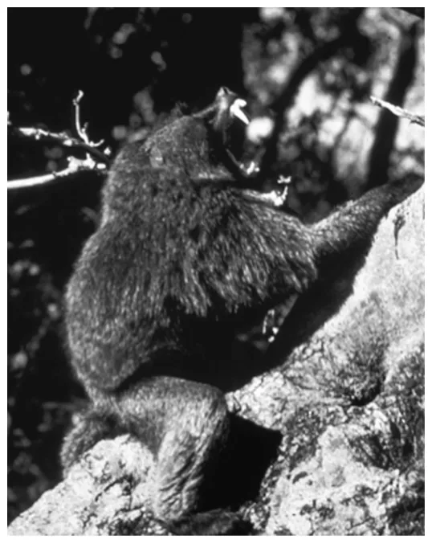
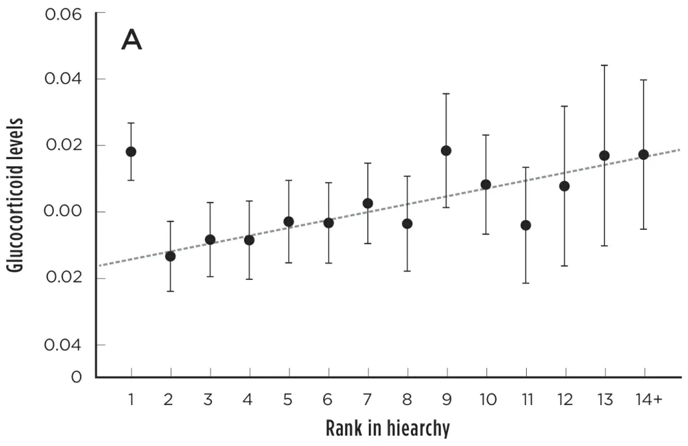
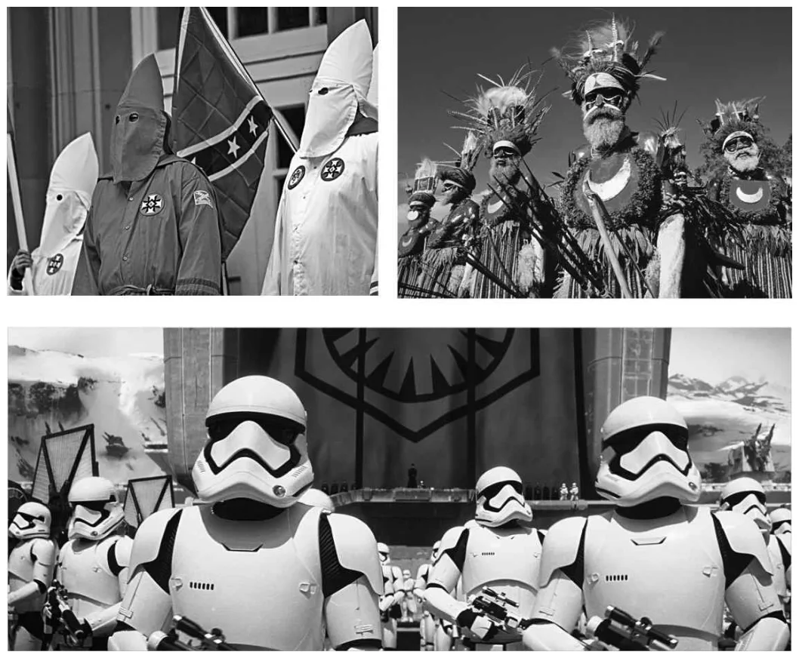

Chương 12 — Hệ thống phân cấp, sự phục tùng và phản kháng
Mười hai
Thứ bậc, Sự phục tùng và
Sự kháng cự
Thoạt nhìn, chương này đơn giản chỉ bổ sung cho chương trước. Việc phân chia Chúng ta/Họ (Us/Them) nói về các mối quan hệ giữa các nhóm và xu hướng tự động thiên vị nhóm nội (in-group) hơn nhóm ngoại (out-group) của chúng ta. Tương tự, thứ bậc nói về một kiểu quan hệ bên trong các nhóm, xu hướng tự động thiên vị những người có thứ hạng gần với chúng ta hơn những người ở xa. Các chủ đề khác cũng lặp lại — sự xuất hiện của những xu hướng này từ rất sớm trong đời và ở các loài khác, cùng những nền tảng nhận thức và cảm xúc đan xen nhau.
Hơn nữa, việc phân loại Chúng ta/Họ và vị thế thứ bậc có sự tương tác với nhau. Trong một nghiên cứu, các đối tượng được yêu cầu xác định chủng tộc cho ảnh của những cá nhân có ngoại hình chủng tộc mơ hồ; những người mặc trang phục địa vị thấp có nhiều khả năng bị phân loại là người da đen hơn, còn trang phục địa vị cao là người da trắng.1 Do đó, trong số những đối tượng người Mỹ này, sự phân đôi Chúng ta/Họ theo chủng tộc và thứ bậc địa vị kinh tế xã hội chồng lấn lên nhau.
Nhưng như chúng ta sẽ thấy, thứ bậc đi theo những hướng khác với sự phân chia Chúng ta/Họ, và theo những cách độc nhất ở loài người: Giống như các loài có thứ bậc khác, chúng ta có những cá thể đầu đàn (alpha), nhưng không giống hầu hết các loài khác, đôi khi chúng ta được phép lựa chọn họ. Hơn nữa, họ thường không chỉ là người có thứ hạng cao nhất mà còn “lãnh đạo”, cố gắng tối đa hóa thứ gọi là lợi ích chung. Thêm vào đó, các cá nhân cạnh tranh vị trí lãnh đạo với những tầm nhìn khác nhau về cách tốt nhất để đạt được lợi ích chung đó — tức các hệ tư tưởng chính trị. Và cuối cùng, chúng ta thể hiện sự phục tùng đối với cả một nhân vật có thẩm quyền lẫn ý niệm về Thẩm quyền (Authority).
BẢN CHẤT VÀ SỰ ĐA DẠNG CỦA CÁC HỆ THỐNG THỨ BẬC
Trước hết, thứ bậc là một hệ thống xếp hạng nhằm hợp thức hóa việc tiếp cận bất bình đẳng đối với các nguồn lực hữu hạn, từ thịt cho đến thứ mơ hồ gọi là “uy tín”. Chúng ta bắt đầu bằng việc xem xét thứ bậc ở các loài khác (với lưu ý rằng không phải mọi loài sống theo bầy đàn đều có thứ bậc).
Bức tranh sách giáo khoa thập niên 1960 về thứ bậc ở các loài khác rất đơn giản. Một nhóm hình thành một hệ thống thứ bậc tuyến tính, ổn định, trong đó cá thể alpha thống trị tất cả, cá thể beta thống trị tất cả trừ alpha, gamma tất cả trừ alpha và beta, cứ thế tiếp diễn.
Thứ bậc thiết lập một hiện trạng (status quo) bằng cách nghi thức hóa sự bất bình đẳng. Hai con khỉ đầu chó bắt gặp một thứ gì đó tốt đẹp — chẳng hạn một chỗ có bóng râm tránh nắng. Nếu không có quan hệ thống trị ổn định, sẽ nổ ra một cuộc ẩu đả có nguy cơ gây thương tích. Tương tự với những quả sung trên cây đang ra trái một giờ sau đó, hay cơ hội được ai đó chải lông sau đó nữa, v.v. Thay vào đó, đánh nhau hiếm khi xảy ra, và nếu một cá thể cấp dưới quên mất địa vị của mình, một cái “ngáp đe dọa” — màn phô trương răng nanh mang tính nghi thức — từ con đực thống trị thường là quá đủ.*,2
Tại sao lại có hệ thống xếp hạng? Câu trả lời vào khoảng thập niên 1960 là chọn lọc nhóm kiểu Marlin Perkins, nơi một loài hưởng lợi từ một hệ thống xã hội ổn định mà ai cũng biết vị trí của mình. Quan điểm này được thúc đẩy bởi niềm tin của ngành linh trưởng học rằng trong một hệ thống thứ bậc, cá thể alpha (tức kẻ được ưu tiên chọn trước bất kỳ thứ gì tốt đẹp) theo một cách nào đó là một “nhà lãnh đạo” làm điều gì đó hữu ích cho cả nhóm. Điều này được nhấn mạnh bởi nhà linh trưởng học Irven DeVore của Đại học Harvard, người báo cáo rằng ở loài khỉ đầu chó thảo nguyên, con đực alpha dẫn đầu bầy về hướng kiếm ăn mỗi ngày, dẫn đầu các cuộc đi săn chung, bảo vệ mọi thành viên khỏi sư tử, răn dạy lũ trẻ, thay bóng đèn, v.v. Hóa ra điều này hoàn toàn nhảm nhí. Con đực alpha không biết phải đi hướng nào (vì chúng chuyển từ bầy khác đến khi mới lớn). Dù sao cũng chẳng ai đi theo chúng; thay vào đó mọi cá thể đều đi theo những con cái già, những kẻ thực sự biết đường. Các cuộc đi săn là những màn mạnh ai nấy chạy vô tổ chức. Và một con đực alpha có thể đối đầu với sư tử để bảo vệ một đứa nhỏ — nếu đứa nhỏ đó có khả năng là con của nó. Còn không, nó sẽ tìm chỗ an toàn nhất cho mình.

Một con khỉ đầu chó đực đang thực hiện cú ngáp đe dọa (hy vọng là) đầy uy hiếp.
Khi nhìn nhận không qua lăng kính màu hồng kiểu Perkins, lợi ích của thứ bậc mang tính cá nhân. Những tương tác khẳng định hiện trạng rõ ràng giúp ích cho tầng lớp trên. Trong khi đó, đối với cấp dưới, thà không có được chỗ bóng râm còn hơn là không có được nó sau khi lãnh một nhát cắn bằng răng nanh. Điều này hợp lý trong một hệ thống xếp hạng tĩnh, mang tính cha truyền con nối. Trong các hệ thống mà thứ hạng có thể thay đổi, sự thận trọng này phải được cân bằng với việc thỉnh thoảng thách thức mọi thứ — bởi vì con đực alpha có thể đã qua thời kỳ đỉnh cao và đang sống dựa vào chiêu trò hù dọa.
Đây là một “trật tự mổ” (pecking order) kinh điển (thuật ngữ bắt nguồn từ hệ thống thứ bậc của loài gà mái). Các biến thể bắt đầu xuất hiện. Mối quan tâm đầu tiên là liệu có thực sự tồn tại một hệ thống thứ bậc theo nghĩa có các cấp độ thứ hạng hay không. Thay vào đó, ở một số loài (ví dụ, khỉ đuôi sóc marmoset Nam Mỹ) chỉ có cá thể alpha và phần còn lại, với mối quan hệ khá bình đẳng.
Ở những loài có sự phân cấp, có vấn đề về việc một “thứ hạng” thực sự có nghĩa là gì. Nếu thứ hạng của bạn là số sáu trong một hệ thống thứ bậc, trong tâm trí bạn, các số từ một đến năm có phải là những gã giống hệt nhau mà bạn tốt hơn hết nên cúi đầu tuân phục, còn từ số bảy đến vô cùng là những kẻ thấp cổ bé họng không có gì khác biệt? Nếu vậy, việc số hai và số ba, hay số chín và số mười, có căng thẳng với nhau hay không sẽ chẳng liên quan gì đến bạn; sự phân cấp thứ hạng khi đó chỉ nằm trong mắt nhà linh trưởng học, chứ không phải trong mắt loài linh trưởng.
Trên thực tế, những loài linh trưởng như vậy có suy nghĩ về các cấp độ thứ hạng. Ví dụ, một con khỉ đầu chó thường tương tác khác nhau với gã đứng trên nó một bậc so với gã đứng trên nó năm bậc. Hơn nữa, linh trưởng chú ý đến các cấp độ không trực tiếp liên quan đến chúng. Hãy nhớ lại từ chương 10 cách các nhà nghiên cứu ghi âm tiếng kêu của các cá thể trong bầy, cắt ghép chúng để tạo ra các kịch bản xã hội. Phát bản ghi âm của số mười phát ra tiếng kêu thống trị và số một đáp lại bằng tiếng kêu phục tùng, và tất cả mọi con đều chú ý: ối giời, Bill Gates vừa đi ăn xin một gã vô gia cư kìa.
Điều này có thể được trừu tượng hóa hơn nữa, như đã thấy ở loài quạ, một loài chim thông minh đến kinh ngạc. Giống như khỉ đầu chó, những tiếng kêu ngụ ý sự đảo ngược quyền lực thống trị thu hút sự chú ý nhiều hơn là hiện trạng. Đáng chú ý, điều này thậm chí xảy ra đối với những cuộc đảo ngược giữa các con chim ở đàn hàng xóm. Quạ nhận biết được các mối quan hệ thống trị chỉ bằng cách lắng nghe và thích thú với những chuyện tầm phào về thứ bậc của một nhóm khác.
Tiếp theo là vấn đề về sự biến thiên trong cùng một loài và giữa các loài về việc cuộc sống ở một thứ hạng cụ thể sẽ như thế nào. Liệu việc có thứ hạng cao chỉ đơn thuần có nghĩa là mọi người luôn để mắt đến tâm trạng của bạn hay, ở thái cực ngược lại, là không ai khác có đủ calo để rụng trứng, tiết sữa hoặc sống sót? Cấp dưới thách thức các cá thể thống trị thường xuyên đến mức nào? Các cá thể thống trị dễ dàng trút sự bực bội lên cấp dưới đến mức nào? Những cấp dưới như vậy có bao nhiêu lối thoát để đối phó (ví dụ, có ai đó để chải lông cùng)?
Sau đó là vấn đề làm thế nào để đạt được thứ hạng cao. Trong nhiều trường hợp (chẳng hạn khỉ đầu chó cái, như đã lưu ý), thứ hạng được thừa kế, một hệ thống mang đậm dấu ấn của chọn lọc dòng dõi. Ngược lại, ở các loài/giới tính khác (ví dụ khỉ đầu chó đực), thứ hạng thay đổi theo thời gian, biến chuyển tùy thuộc vào các cuộc đánh nhau, đối đầu và những màn kịch đậm chất Shakespeare, nơi việc leo lên trong thứ bậc phụ thuộc vào cơ bắp, răng nanh sắc nhọn và giành chiến thắng trong trận chiến quyết định.*
Hoan hô cho việc cào cấu để leo lên đỉnh cao, cho thứ chủ nghĩa tư bản cơ bắp, đẫm mồ hôi và tổng bằng không. Nhưng còn vấn đề thú vị hơn là làm thế nào thứ hạng cao, một khi đã đạt được, lại được duy trì? Như chúng ta sẽ thấy, điều này ít liên quan đến cơ bắp mà liên quan nhiều hơn đến kỹ năng xã hội.
Điều này dẫn đến một điểm then chốt — năng lực xã hội là một thách thức, và điều này được phản ánh trong não bộ. Nhà nhân chủng học người Anh Robin Dunbar đã chỉ ra rằng trên khắp các nhóm phân loại khác nhau (ví dụ, “chim”, “động vật có móng guốc” hay “linh trưởng”), quy mô trung bình của nhóm xã hội ở một loài càng lớn thì (a) não càng lớn so với tổng kích thước cơ thể, và (b) vỏ não mới (neocortex) càng lớn so với tổng kích thước não. “Giả thuyết não bộ xã hội” (social brain hypothesis) có tầm ảnh hưởng của Dunbar cho rằng sự gia tăng mức độ phức tạp xã hội và sự mở rộng tiến hóa của vỏ não mới có mối liên hệ với nhau. Mối liên hệ này cũng xảy ra trong nội bộ một loài. Ở một số loài linh trưởng, quy mô nhóm có thể chênh lệch gấp mười lần (tùy thuộc vào sự trù phú của hệ sinh thái). Điều này đã được mô hình hóa trong một nghiên cứu chẩn đoán hình ảnh thần kinh hấp dẫn, trong đó khỉ macaque nuôi nhốt được xếp vào các nhóm có quy mô khác nhau; nhóm càng lớn thì vỏ não trước trán và hồi thái dương trên (superior temporal gyrus) — một vùng vỏ não liên quan đến Thuyết Tâm trí (Theory of Mind) — càng dày lên, và sự liên kết hoạt động giữa hai vùng càng chặt chẽ hơn.*3
Do đó, sự phức tạp xã hội của linh trưởng và bộ não lớn luôn đi đôi với nhau. Điều này được thể hiện rõ hơn khi xem xét các loài phân hạch – hợp nhất (fission-fusion), nơi quy mô của nhóm xã hội thường xuyên thay đổi đáng kể. Chẳng hạn, khỉ đầu chó bắt đầu và kết thúc một ngày trong một bầy lớn, gắn kết, trong khi việc kiếm ăn vào giữa ngày lại diễn ra theo các nhóm nhỏ. Các ví dụ khác, linh cẩu săn mồi theo bầy nhưng lại đi ăn xác thối đơn lẻ, còn sói thường làm điều ngược lại.
Đời sống xã hội phức tạp hơn ở các loài phân hạch – hợp nhất. Bạn phải nhớ xem thứ hạng của ai đó có khác đi khi ở trong một nhóm nhỏ so với cả bầy hay không. Việc xa cách ai đó cả ngày khiến người ta nảy sinh cám dỗ muốn thử xem quan hệ thống trị có thay đổi từ sau bữa sáng hay không.
Một nghiên cứu đã so sánh các loài linh trưởng phân hạch – hợp nhất (tinh tinh, tinh tinh lùn bonobo, đười ươi, khỉ nhện) và các loài không phân hạch – hợp nhất (khỉ đột, khỉ mũ capuchin, khỉ đuôi dài macaque).4 Trong số những động vật nuôi nhốt này, các loài phân hạch – hợp nhất làm tốt hơn ở các nhiệm vụ thuộc vỏ não trán và có vỏ não mới lớn hơn so với tổng kích thước não. Các nghiên cứu về họ quạ (quạ đen, quạ khoang, chim ác là, quạ gáy xám) cũng cho thấy điều tương tự.
Do đó, “thứ hạng” và “thứ bậc” ở các loài động vật khác hoàn toàn không đơn giản và thay đổi đáng kể tùy thuộc vào loài, giới tính và nhóm xã hội.
THỨ HẠNG VÀ THỨ BẬC Ở LOÀI NGƯỜI
Hệ thống thứ bậc của con người giống với các loài khác ở nhiều điểm. Ví dụ, có sự phân biệt giữa thứ bậc ổn định và không ổn định — nhiều thế kỷ dưới triều đại Sa hoàng so với hiệp đầu tiên của Cách mạng Nga. Như chúng ta sẽ thấy dưới đây, những tình huống đó gợi lên các kiểu kích hoạt não bộ khác nhau.
Quy mô nhóm cũng quan trọng — các loài linh trưởng có nhóm xã hội lớn hơn sở hữu vỏ não lớn hơn so với phần còn lại của não (với con người đứng đầu cả hai chỉ số).5 Nếu bạn vẽ biểu đồ kích thước vỏ não mới theo quy mô trung bình của nhóm xã hội trên các loài linh trưởng, bạn sẽ có “con số Dunbar”, quy mô nhóm trung bình được dự đoán trong các nền văn hóa truyền thống của loài người. Con số đó là 150 người, và có rất nhiều bằng chứng ủng hộ dự đoán đó.
Điều này cũng diễn ra ở thế giới phương Tây, nơi quy mô mạng lưới xã hội của một người càng lớn (thường được tính bằng số lượng mối quan hệ qua e-mail/tin nhắn), thì vùng vmPFC, PFC ổ mắt và hạch hạnh nhân (amygdala) càng lớn, và các kỹ năng liên quan đến Thuyết Tâm trí của người đó càng tốt hơn.6
Liệu những vùng não này nở rộng khi một người có mạng lưới xã hội lớn hơn, hay kích thước lớn hơn của những vùng này khiến người ta có khuynh hướng hình thành mạng lưới lớn hơn? Tự nhiên thôi, một phần của cả hai.
Giống như ở các loài khác, chất lượng cuộc sống của con người cũng thay đổi theo hệ quả của sự bất bình đẳng thứ hạng — có một sự khác biệt lớn giữa việc kẻ quyền lực được xếp chỗ ngồi ở nhà hàng trước bạn và việc kẻ quyền lực được quyền chặt đầu bạn nếu họ nổi hứng. Hãy nhớ lại nghiên cứu tại ba mươi bảy quốc gia cho thấy bất bình đẳng thu nhập càng cao thì tình trạng bắt nạt ở lứa tuổi tiền thiếu niên trong trường học càng nhiều. Nói cách khác, những quốc gia có thứ bậc kinh tế xã hội tàn bạo hơn sẽ tạo ra những đứa trẻ thực thi thứ bậc của riêng chúng một cách tàn bạo hơn.7
Giữa những điểm tương đồng xuyên loài này, vẫn có những điều độc đáo về loài người, bao gồm những điểm sau.
Tham gia vào nhiều hệ thống thứ bậc
Chúng ta thuộc về nhiều hệ thống thứ bậc khác nhau và có thể có những thứ hạng rất khác nhau trong đó.* Đương nhiên, điều này mời gọi sự hợp lý hóa và biện minh cho hệ thống — tự quyết định tại sao những thứ bậc nơi ta lẹt đẹt lại là thứ vớ vẩn còn thứ bậc nơi ta làm vua mới thực sự đáng giá.
Ẩn chứa trong việc thuộc về nhiều thứ bậc là khả năng chồng lấn của chúng. Hãy xem xét địa vị kinh tế xã hội, thứ bao hàm cả thứ bậc địa phương lẫn toàn cầu. Tôi đang làm ăn khấm khá về mặt kinh tế xã hội — xe của tôi xịn hơn xe của anh. Tôi đang làm ăn thảm hại — tôi không giàu bằng Bill Gates.
Sự chuyên biệt hóa của một số hệ thống xếp hạng
Một con tinh tinh có thứ hạng cao thường giỏi ở nhiều việc liên quan đến nhau. Nhưng con người có thể sống trong những hệ thống thứ bậc chuyên biệt đến mức khó tin. Ví dụ: Có một anh chàng tên là Joey Chestnut, một vị thần trong một tiểu văn hóa — anh ta là người thi ăn xúc xích thành công nhất trong lịch sử. Tuy nhiên, liệu năng khiếu của Chestnut có khái quát hóa sang các lĩnh vực khác được hay không thì không rõ.
Các tiêu chuẩn nội tại
Đây là tình huống có những tiêu chuẩn nội tại độc lập với thế giới bên ngoài. Ví dụ, thắng hay thua trong một môn thể thao đồng đội thường làm tăng hoặc giảm tương ứng nồng độ testosterone ở nam giới. Nhưng mọi thứ còn tinh tế hơn thế — testosterone theo sát việc chiến thắng nhờ kỹ năng (hơn là nhờ may mắn), và cũng theo sát thành tích cá nhân (hơn là thành tích đồng đội).8
— Như vậy, như thường lệ, chúng ta giống hệt các loài động vật khác nhưng cũng hoàn toàn khác biệt. Bây giờ chúng ta xem xét sinh học của từng thứ hạng cá nhân.
GÓC NHÌN TỪ TRÊN XUỐNG, GÓC NHÌN TỪ DƯỚI LÊN
Nhận diện thứ hạng
Cũng giống như khả năng nhận diện “Họ”, chúng ta cực kỳ quan tâm và thành thạo trong việc phát hiện sự khác biệt về thứ hạng. Ví dụ, bốn mươi mili-giây là tất cả những gì ta cần để phân biệt một cách đáng tin cậy giữa một khuôn mặt thống trị (với ánh nhìn trực diện) và một khuôn mặt phục tùng (với ánh nhìn lảng tránh và lông mày hạ thấp). Địa vị cũng được ra hiệu qua cơ thể, dù ở mức độ kém chính xác hơn — sự thống trị với phần thân trên phô bày cùng hai tay dang rộng, sự phục tùng với hai tay che chắn phần thân khom xuống, cố gắng tàng hình. Một lần nữa, chúng ta nhận ra những tín hiệu đó ở tốc độ tự động.9
Trẻ sơ sinh của loài người cũng nhận ra sự khác biệt về địa vị, như được chứng minh trong một nghiên cứu thực sự khéo léo. Cho một đứa trẻ sơ sinh xem màn hình máy tính hiển thị một hình vuông lớn và một hình vuông nhỏ; mỗi hình đều có mắt và miệng.10 Hai hình vuông nằm ở hai đầu đối diện của màn hình và liên tục di chuyển sang phía bên kia, đi ngang qua nhau trong quá trình đó. Sau đó cho xem một phiên bản mà cả hai đâm sầm vào nhau — xung đột. Hai hình vuông va vào nhau liên tục cho đến khi một hình “nhượng bộ” bằng cách nằm xuống, để hình kia đi qua. Trẻ mới biết đi nhìn vào tương tác đó lâu hơn khi hình vuông lớn là kẻ nhượng bộ, thay vì hình vuông nhỏ. Kịch bản đầu tiên thú vị hơn vì nó vi phạm kỳ vọng — “Ê, tôi tưởng hình vuông lớn thống trị hình vuông nhỏ chứ.” Giống hệt loài khỉ và họ quạ.
Nhưng khoan đã, điều này có thể chỉ phản ánh vật lý dân gian, chứ không phải sự nhạy cảm với thứ bậc — vật lớn húc đổ vật nhỏ, chứ không phải ngược lại. Yếu tố gây nhiễu này đã được loại bỏ. Thứ nhất, hai hình vuông đối đầu không hề chạm vào nhau khi một bên nhượng bộ. Thứ hai, bên phục tùng sẽ ngã theo hướng ngược lại với hướng mà vật lý dự đoán — thay vì bị húc ngã về phía sau, nó tự phủ phục xuống trước hình vuông alpha.
Đi kèm với sự tinh thông này là mối quan tâm mãnh liệt đến thứ bậc — như đã nhấn mạnh ở chương 9, chuyện tầm phào chủ yếu xoay quanh trạng thái của địa vị: Có kẻ quyền thế nào vừa ngã ngựa không? Gần đây có kẻ hèn mọn nào được thừa hưởng gia tài gì không? Bất kể hình vuông nào thắng, trẻ sơ sinh đều nhìn lâu hơn vào tình huống xung đột so với khi hai hình vuông lướt qua nhau một cách hòa bình.
Đây là sự tư lợi hợp lý. Biết được cục diện thứ bậc giúp bạn điều hướng tốt hơn. Nhưng còn nhiều điều hơn là chỉ tư lợi. Những con khỉ và loài quạ kia không chỉ chú ý khi có sự đảo ngược thứ hạng trong nhóm của chúng; chúng cũng làm điều tương tự khi nghe lén hàng xóm. Chúng ta cũng vậy.11
Điều gì đang xảy ra trong não chúng ta khi ta suy ngẫm về thứ hạng?12 Đương nhiên, vỏ não trước trán lên tiếng. Tổn thương vùng trán làm suy giảm kỹ năng nhận diện các mối quan hệ thống trị (cùng với việc nhận diện quan hệ họ hàng, sự lừa dối hay sự thân mật trên khuôn mặt). Vùng vlPFC và dlPFC kích hoạt và kết nối với nhau khi chúng ta suy đoán các mối quan hệ thống trị hoặc nhìn vào một khuôn mặt thống trị, phản ánh các thành phần cảm xúc và nhận thức kết hợp trong quá trình này. Những phản ứng này rõ rệt nhất khi xem xét một người khác giới (điều này có thể phản ánh mục tiêu giao phối hơn là sự quan tâm học thuật đơn thuần về thứ bậc).
Nhìn thấy một khuôn mặt thống trị cũng kích hoạt hồi thái dương trên (STG, với vai trò trong Thuyết Tâm trí) và làm tăng sự kết nối của nó với PFC — chúng ta quan tâm hơn đến việc những cá nhân thống trị đang nghĩ gì.13 Hơn nữa, các tế bào thần kinh “địa vị xã hội” riêng lẻ cũng xuất hiện ở loài khỉ. Và như đã lưu ý trong chương 2, việc suy ngẫm về một thứ bậc không ổn định làm tất cả những điều trên, cộng thêm kích hoạt hạch hạnh nhân, phản ánh những tác động gây bất an của sự bất ổn. Tuy nhiên, tất nhiên, không có điều nào trong số này cho chúng ta biết ta đang suy nghĩ cụ thể gì vào những lúc đó.
Bộ não của bạn và địa vị của chính bạn
Thứ hạng của chính bạn gây ra những tác động hợp lý lên bộ não của bạn. Ở khỉ macaque, việc tăng thứ hạng làm tăng tín hiệu dopamine trung não – hệ viền (mesolimbic). Và quay lại nghiên cứu về khỉ rhesus cho thấy việc ở trong một nhóm xã hội lớn hơn gây ra sự mở rộng và kết nối chức năng của STG và PFC. Nghiên cứu cũng chỉ ra rằng thứ hạng đạt được trong mỗi nhóm càng cao thì sự mở rộng và kết nối càng lớn. Nhất quán với điều đó, một nghiên cứu trên chuột cho thấy những con có thứ hạng cao hơn có các tín hiệu kích thích mạnh hơn đi vào vùng tương đương ở chuột của dlPFC (vùng nhận thức).14
Tôi rất thích những phát hiện này. Như tôi đã nói, ở nhiều loài xã hội, đạt được thứ hạng cao là nhờ răng sắc và kỹ năng chiến đấu tốt. Nhưng duy trì thứ hạng cao lại là nhờ trí tuệ xã hội và khả năng kiểm soát xung động: biết những lời khiêu khích nào cần phớt lờ và những liên minh nào cần thành lập, hiểu được hành động của các cá thể khác.
Con khỉ làm nên lịch sử, hay lịch sử làm nên con khỉ? Một khi các nhóm đã được hình thành, liệu những cá thể trở thành kẻ thống trị có phản ứng bằng sự mở rộng lớn nhất ở các vùng não đó không? Hay trước khi hình thành nhóm, những cá thể định sẵn sẽ trở thành kẻ thống trị vốn đã được phú cho những vùng não phát triển sẵn đó rồi?
Đáng tiếc là các con vật không được chụp ảnh não trước và sau khi hình thành nhóm trong nghiên cứu. Tuy nhiên, các công trình tiếp theo cho thấy quy mô nhóm càng lớn thì mối liên hệ giữa sự thống trị và những thay đổi não bộ đó càng lớn, gợi ý rằng việc đạt được thứ hạng cao thúc đẩy sự mở rộng này.* Ngược lại, nghiên cứu trên chuột cho thấy khi tính dễ kích thích của khớp thần kinh trong dlPFC được tăng lên hoặc giảm xuống, thứ hạng sẽ tăng hoặc giảm tương ứng, gợi ý rằng sự mở rộng thúc đẩy việc đạt được thứ hạng cao. Bộ não có thể định hình hành vi, hành vi có thể định hình bộ não, bộ não lại có thể định hình . . .15
Cơ thể bạn và địa vị của chính bạn
Còn những khác biệt sinh học bên ngoài não bộ theo chức năng của thứ hạng thì sao? Ví dụ, những con đực thứ hạng cao và thứ hạng thấp có khác nhau về hồ sơ testosterone của chúng không, và nếu có khác biệt, chúng là nguyên nhân, hệ quả, hay chỉ là mối tương quan đơn thuần của sự khác biệt thứ hạng?
Nội tiết học dân gian luôn cho rằng thứ hạng cao (ở bất kỳ loài nào) và nồng độ testosterone tăng cao luôn đi đôi với nhau, với việc cái sau tiếp sức cho cái trước. Nhưng như đã đề cập kỹ trong chương 4, cả hai điều đó đều không đúng ở loài linh trưởng. Xin nhắc lại:
Trong các hệ thống thứ bậc ổn định, những con đực thứ hạng cao thường không có nồng độ testosterone cao nhất. Thay vào đó, thường là những con đực mới lớn thứ hạng thấp, hay gây sự những trận đánh mà chúng không thể kết thúc nổi. Khi có mối liên hệ giữa thứ hạng cao và testosterone cao, điều đó thường phản ánh tỷ lệ hành vi tình dục cao hơn ở các cá thể thống trị đang thúc đẩy quá trình tiết hormone. Một ngoại lệ cho điều trên là trong thời kỳ bất ổn. Ví dụ, ở một số loài linh trưởng, con đực thứ hạng cao có mức testosterone cao nhất trong vài tháng đầu nhưng không phải nhiều năm sau khi hình thành nhóm. Trong thời kỳ bất ổn, mối quan hệ testosterone cao/thứ hạng cao là hệ quả của tỷ lệ đánh nhau cao trong nhóm thứ hạng cao hơn là do bản thân thứ hạng.16
Nhắc lại “giả thuyết thách thức” (challenge hypothesis), sự gia tăng nồng độ testosterone do đánh nhau gây ra không hẳn là về sự hung hăng mà là về sự thách thức. Nếu địa vị được duy trì bằng sự hung hăng, testosterone sẽ thúc đẩy sự hung hăng; nếu địa vị được duy trì bằng cách viết những bài thơ haiku tinh tế, tuyệt đẹp, testosterone sẽ thúc đẩy điều đó.
Tiếp theo chúng ta xem xét mối quan hệ giữa thứ hạng và căng thẳng (stress). Liệu các thứ hạng khác nhau có gắn liền với các mức hormone căng thẳng khác nhau, các kiểu đối phó khác nhau và tỷ lệ mắc các bệnh liên quan đến căng thẳng khác nhau không? Làm kẻ thống trị hay kẻ phục tùng thì căng thẳng hơn?
Một khối lượng tài liệu đồ sộ cho thấy cảm giác kiểm soát và khả năng dự đoán giúp giảm căng thẳng. Thế nhưng nghiên cứu trên khỉ do Joseph Brady thực hiện năm 1958 lại đưa ra một góc nhìn khác. Một nửa số khỉ có thể ấn thanh chắn để trì hoãn các cú sốc điện (khỉ “điều hành”); nửa còn lại thụ động nhận cú sốc bất cứ khi nào con khỉ điều hành bị giật. Và những con khỉ điều hành, với quyền kiểm soát và khả năng dự đoán của mình, lại có nhiều khả năng bị loét dạ dày hơn. Điều này đã khai sinh ra “hội chứng căng thẳng của nhà điều hành” (executive stress syndrome) — những người ở trên đỉnh cao phải gánh chịu những tác nhân gây căng thẳng của quyền kiểm soát, sự lãnh đạo và trách nhiệm.17
Hội chứng căng thẳng của nhà điều hành đã trở thành một trào lưu lan truyền. Nhưng một vấn đề lớn là lũ khỉ không được phân bổ ngẫu nhiên làm “nhà điều hành” và “người không điều hành”. Thay vào đó, những con ấn thanh chắn sớm nhất trong các nghiên cứu thí điểm đã được chọn làm nhà điều hành.* Những con khỉ như vậy sau đó được chứng minh là có phản ứng cảm xúc mạnh hơn, vì vậy Brady đã vô tình dồn toàn bộ những con có thần kinh dễ bị kích động và dễ loét dạ dày sang phe điều hành.
Thôi thì tạm biệt những nhà điều hành bị loét dạ dày; các nghiên cứu đương đại cho thấy tình trạng sức khỏe liên quan đến căng thẳng tồi tệ nhất thường xảy ra ở tầng lớp quản lý cấp trung, với sự kết hợp chết người giữa yêu cầu công việc cao nhưng ít quyền tự chủ — trách nhiệm mà không có quyền kiểm soát.
Đến thập niên 1970, giáo điều cho rằng các sinh vật cấp dưới là những kẻ căng thẳng và ốm yếu nhất. Điều này lần đầu tiên được chứng minh ở loài gặm nhấm trong phòng thí nghiệm, nơi các con vật cấp dưới thường có mức glucocorticoid lúc nghỉ tăng cao. Nói cách khác, ngay cả khi không có tác nhân gây căng thẳng, chúng vẫn biểu hiện dấu hiệu kích hoạt mạn tính phản ứng căng thẳng. Điều tương tự cũng được quan sát thấy ở các loài linh trưởng từ khỉ rhesus đến vượn cáo. Tương tự ở chuột hamster, chuột lang, sói, thỏ và lợn. Thậm chí cả cá. Thậm chí cả sóc bay úc (sugar glider), bất kể chúng là con gì. Trong một cặp nghiên cứu ngoài ý muốn trên khỉ nuôi nhốt, nơi các cá thể cấp dưới về cơ bản bị chèn ép đến chết, những con vật đó bị tổn thương nặng nề ở vùng hải mã (hippocampus), một vùng não rất nhạy cảm với tác hại của việc dư thừa glucocorticoid.18
Công trình của chính tôi với khỉ đầu chó ở châu Phi cũng cho thấy điều tương tự (đây là những nghiên cứu đầu tiên như vậy trên linh trưởng hoang dã). Nhìn chung, khỉ đầu chó đực thứ hạng thấp có mức glucocorticoid cơ bản tăng cao. Khi có điều gì đó căng thẳng thực sự xảy ra, phản ứng căng thẳng glucocorticoid của chúng lại tương đối chậm chạp. Khi tác nhân gây căng thẳng qua đi, mức độ của chúng quay trở lại mức nền cao đó chậm hơn. Nói cách khác, quá nhiều thứ đó trong máu khi bạn không cần, và quá ít khi bạn cần. Đáng chú ý, ở cấp độ chi tiết của não bộ, tuyến yên và tuyến thượng thận, mức glucocorticoid cơ bản tăng cao của một con khỉ cấp dưới xảy ra vì những lý do giống hệt như mức tăng cao ở những người bị trầm cảm nặng. Đối với một con khỉ đầu chó, sự phục tùng xã hội giống với trạng thái bất lực tập nhiễm (learned helplessness) của bệnh trầm cảm.
Lượng glucocorticoid dư thừa đẩy bạn vào rắc rối theo nhiều cách khác nhau, giúp giải thích tại sao căng thẳng mạn tính khiến bạn đổ bệnh. Khỉ đầu chó cấp dưới cũng phải trả giá ở những khía cạnh khác. Chúng có (a) huyết áp cao và phản ứng tim mạch chậm chạp trước tác nhân gây căng thẳng; (b) mức cholesterol “tốt” HDL thấp hơn; (c) suy giảm miễn dịch tinh vi, tần suất mắc bệnh cao hơn và vết thương lâu lành hơn; (d) hệ thống tinh hoàn dễ bị gián đoạn bởi căng thẳng hơn so với những con đực thống trị; và (e) nồng độ tuần hoàn của một yếu tố tăng trưởng chủ chốt thấp hơn. Đừng dại mà làm một con khỉ đầu chó cấp dưới.
Câu chuyện con gà và quả trứng lại tái diễn — liệu một đặc điểm sinh lý cụ thể có góp phần tạo nên thứ hạng, hay ngược lại? Điều này không thể xác định được ở động vật hoang dã, nhưng trong các quần thể linh trưởng nuôi nhốt, những đặc điểm sinh lý đặc trưng của một thứ hạng thường theo sau, chứ không đi trước, việc thiết lập thứ hạng đó.19
Vào thời điểm đó, tôi sẵn sàng tuyên bố rằng những phát hiện này phản ánh bản chất của Thứ bậc (Hierarchy viết hoa) và sự căng thẳng của việc phục tùng xã hội. Điều đó hóa ra lại sai hoàn toàn.
Nếp nhăn đầu tiên được cung cấp bởi Jeanne Altmann ở Princeton và Susan Alberts ở Duke, khi nghiên cứu khỉ đầu chó hoang dã với thứ bậc ổn định. Họ tìm thấy bức tranh quen thuộc, tức là sự phục tùng gắn liền với mức glucocorticoid cơ bản tăng cao. Tuy nhiên, thật bất ngờ, nồng độ ở các con alpha lại tăng cao vào khoảng tương đương với những con đực thứ hạng thấp nhất. Tại sao cuộc sống của con đực alpha lại căng thẳng hơn con đực beta? Hai thứ hạng này có tỷ lệ bị thách thức bởi các con đực thứ hạng thấp hơn (một nguồn gây căng thẳng) và được các con cái chải lông cho (một nguồn giúp đối phó) tương đương nhau. Tuy nhiên, con đực alpha đánh nhau thường xuyên hơn và dành nhiều thời gian hơn cho việc cặp kè tình dục với con cái (điều này cực kỳ căng thẳng, vì con đực phải bảo vệ bạn tình của mình khỏi sự quấy nhiễu của các con đực khác). Trớ trêu thay, một lợi ích chính của vị thế alpha — việc cặp kè tình dục — lại có thể là một tác nhân gây căng thẳng lớn. Hãy cẩn thận với những gì bạn ao ước.20

Chỉnh sửa từ R. Sapolsky, “Sympathy for the CEO,” Sci 333 (2011): 293.
Truy cập bit.ly/2ngWthp để xem phiên bản lớn hơn của biểu đồ này.
Được rồi, vậy là ngoại trừ lời nguyền của việc làm alpha, sự phục tùng xã hội nhìn chung là căng thẳng. Nhưng điều này cũng sai nốt. Không chỉ thứ hạng là quan trọng mà thứ hạng đó có ý nghĩa gì mới quan trọng.
Hãy xem xét các loài linh trưởng mà người ta tìm thấy mối liên hệ giữa thứ hạng và nồng độ glucocorticoid. Trên khắp các loài này, nồng độ glucocorticoid cơ bản tương đối tăng cao ở động vật cấp dưới nếu: (a) các cá thể thống trị khi tâm trạng xấu thường xuyên trút giận lên cấp dưới; (b) cấp dưới thiếu lối thoát để đối phó (chẳng hạn như một bạn tình chải lông); và/hoặc (c) cấu trúc xã hội khiến các con vật cấp dưới không có họ hàng nào ở bên cạnh. Và khi hồ sơ hoàn toàn ngược lại, thì chính các con vật thống trị mới là kẻ có nồng độ glucocorticoid cao nhất.21
“Ý nghĩa” của thứ hạng và các mối tương quan sinh lý của nó cũng thay đổi giữa các nhóm khác nhau của cùng một loài. Ví dụ, trong khi sức khỏe của khỉ đầu chó cấp dưới đặc biệt tệ hại trong một bầy có tỷ lệ con đực thống trị trút giận cao, thì sức khỏe của con đực thống trị lại tệ hại trong một bầy đang trải qua thời kỳ bất ổn xoay quanh đỉnh của hệ thống thứ bậc.
Và chồng lên tất cả những điều này, tính cách định hình nhận thức về thực tế của thứ hạng. Dùng từ “tính cách” (personality) khi nói về các loài khác trước đây có thể khiến bạn mất chức giáo sư, nhưng giờ đây nó là một chủ đề nóng trong linh trưởng học. Các cá thể ở các loài khác có những khác biệt ổn định về khí chất — khả năng một cá thể trút giận khi bực bội, mức độ hòa đồng xã hội, mức độ hoảng loạn trước điều mới lạ, v.v. Linh trưởng cũng khác nhau ở chỗ chúng nhìn vũng nước là vơi một nửa hay đầy một nửa; trong bối cảnh thứ bậc, một số cá thể đứng số hai chỉ bận tâm rằng mình không phải là số một, còn một số cá thể đứng số chín lại thấy an ủi vì ít ra mình không phải là số mười.
Không có gì ngạc nhiên khi tính cách ảnh hưởng đến mối quan hệ giữa thứ hạng và sức khỏe. Ở cùng một thứ hạng cao, một cá thể có nhiều khả năng kém khỏe mạnh hơn nếu anh ta (a) đặc biệt nhạy cảm với sự mới lạ; (b) nhìn thấy mối đe dọa trong những hoàn cảnh vô hại (ví dụ, đối thủ xuất hiện và chỉ đơn giản nằm ngủ trưa gần đó); (c) không tận dụng quyền kiểm soát xã hội (ví dụ, để đối thủ quyết định thời điểm bắt đầu một cuộc đối đầu rõ ràng); (d) không phân biệt được giữa tin tốt và tin xấu (ví dụ, phân biệt về mặt hành vi giữa việc thắng và thua một trận đánh); và/hoặc (e) không có lối thoát xã hội khi bực bội. Bạn có thể kiếm sống bằng cách mở hội thảo “làm thế nào để thành công trong kinh doanh” cho khỉ đầu chó xoay quanh những yếu tố này.22
Trong khi đó, ở chiều ngược lại, đối với cùng một thứ hạng thấp, một cá thể có xu hướng khỏe mạnh hơn nếu (a) anh ta có nhiều mối quan hệ chải lông; và/hoặc (b) có ai đó thứ hạng còn thấp hơn cả anh ta để làm mục tiêu cho việc trút giận.
Do đó, ở các loài khác, thứ hạng ảnh hưởng đến cơ thể như thế nào? Điều đó phụ thuộc vào việc có một thứ hạng nhất định trong loài đó và nhóm xã hội cụ thể đó là như thế nào, cùng những nét tính cách lọc qua nhận thức về các biến số đó. Còn con người thì sao?
Và Chúng ta
Một chút ít nghiên cứu sinh học thần kinh đã xem xét sự khác biệt trong cách con người cảm nhận về thứ bậc. Quay lại một khái niệm từ chương trước, định hướng thống trị xã hội (SDO), thước đo mức độ con người coi trọng quyền lực và uy tín. Trong một nghiên cứu, các đối tượng xem một người đang chịu đựng nỗi đau cảm xúc. Như đã điểm lại ở chương 2, điều này kích hoạt vỏ não đai trước (anterior cingulate cortex) và vỏ não thùy đảo (insular cortex) — sự đồng cảm, và sự ghê tởm trước hoàn cảnh gây ra nỗi đau đó. Điểm SDO của một người càng cao, hai vùng này càng ít được kích hoạt. Những người quan tâm nhất đến uy tín và quyền lực dường như ít có khả năng cảm thông cho những người kém may mắn hơn nhất.23
Còn các mối tương quan sinh học của việc một con người nắm giữ một thứ hạng cụ thể thì sao? Ở một số khía cạnh, chúng ta tinh tế hơn các loài linh trưởng khác; ở những khía cạnh khác, lại kém tinh tế hơn nhiều.
Hai nghiên cứu đã xem xét các cá nhân có địa vị cao trong chính phủ hoặc quân đội (trong trường hợp sau là các sĩ quan lên đến cấp đại tá). So với nhóm đối chứng địa vị thấp, những người này có mức glucocorticoid cơ bản thấp hơn, ít lo âu tự báo cáo hơn và cảm giác kiểm soát cao hơn (tuy nhiên, điều này chẳng nói lên được cái nào có trước — thứ hạng hay hồ sơ ít căng thẳng).24
Khỉ đầu chó tái xuất. Nhưng có một điều tinh tế hơn đang diễn ra. Các tác giả đã phân tích thứ hạng cao bằng ba câu hỏi: (a) Có bao nhiêu người xếp hạng thấp hơn đối tượng trong tổ chức của anh ta? (b) Anh ta có bao nhiêu quyền tự chủ (ví dụ, tuyển dụng và sa thải)? (c) Anh ta trực tiếp giám sát bao nhiêu người? Và thứ hạng cao chỉ đi kèm với mức glucocorticoid và lo âu thấp chừng nào vị trí đó liên quan đến hai biến số đầu tiên — nhiều cấp dưới, nhiều thẩm quyền. Ngược lại, việc phải trực tiếp giám sát nhiều cấp dưới lại không dự đoán những kết quả tốt đẹp đó.
Điều này củng cố cho lời than vãn của các giám đốc điều hành về việc họ không giám sát hàng tá người; thay vào đó họ có hàng tá ông chủ. Để gặt hái trọn vẹn lợi ích sinh lý của địa vị cao, đừng giám sát con người; thay vào đó, hãy lướt qua nơi làm việc như một bậc thầy của vũ trụ trong khi đám tay chân mà bạn chẳng bao giờ tương tác mỉm cười nịnh bợ. Không chỉ là thứ hạng; mà là thứ hạng đó có ý nghĩa gì và đòi hỏi những gì.
Theo nghĩa nào thì mối quan hệ địa vị/sức khỏe ở con người kém tinh tế hơn ở các loài linh trưởng khác?25 Ở chỗ nó phản ánh hình thức địa vị thấm sâu nhất mà bất kỳ loài linh trưởng nào từng phát minh ra, đó là địa vị kinh tế xã hội (SES). Vô số nghiên cứu xem xét “độ dốc sức khỏe/SES”, thực tế là tuổi thọ cũng như tỷ lệ mắc và tỷ lệ bệnh tật của nhiều căn bệnh đều tồi tệ hơn ở người nghèo.
Để tóm tắt chủ đề rộng lớn đã được điểm lại ở chương 9 này:
Cái nào có trước — nghèo đói hay sức khỏe kém? Áp đảo là cái đầu tiên. Hãy nhớ rằng việc phát triển trong một tử cung có SES thấp làm tăng khả năng sức khỏe kém khi trưởng thành. Không phải là người nghèo có sức khỏe kém còn mọi người khác đều khỏe mạnh như nhau. Cứ mỗi bước đi xuống bậc thang SES, sức khỏe lại tệ hơn. Vấn đề không phải là người nghèo ít được tiếp cận dịch vụ chăm sóc sức khỏe hơn. Độ dốc này xảy ra ở cả những quốc gia có y tế xã hội hóa và chăm sóc sức khỏe toàn dân, và đối với cả những căn bệnh mà tỷ lệ mắc độc lập với việc tiếp cận chăm sóc sức khỏe. Chỉ khoảng một phần ba sự biến thiên được giải thích bởi việc người nghèo tiếp xúc với nhiều yếu tố nguy cơ sức khỏe hơn (ví dụ, ô nhiễm) và ít yếu tố bảo vệ hơn (ví dụ, thẻ thành viên câu lạc bộ sức khỏe). Độ dốc này dường như liên quan đến gánh nặng tâm lý của SES. (a) SES chủ quan dự đoán sức khỏe ít nhất là chính xác ngang bằng SES khách quan, nghĩa là vấn đề không phải là nghèo. Vấn đề là cảm thấy nghèo. (b) Độc lập với mức thu nhập tuyệt đối, sự bất bình đẳng thu nhập trong một cộng đồng càng lớn — nghĩa là người nghèo càng thường xuyên bị xát muối vào địa vị thấp kém của mình — thì độ dốc sức khỏe càng dốc. (c) Sự bất bình đẳng lớn trong một cộng đồng tạo ra vốn xã hội thấp (lòng tin và cảm giác hiệu quả), và đó là nguyên nhân trực tiếp nhất gây ra sức khỏe kém. Tổng hợp lại, các nghiên cứu này cho thấy căng thẳng tâm lý của SES thấp mới là thứ làm giảm sức khỏe. Nhất quán với điều đó, chính những căn bệnh nhạy cảm nhất với căng thẳng (rối loạn tim mạch, tiêu hóa và tâm thần) là những bệnh có độ dốc SES/sức khỏe dốc nhất.
Độ dốc SES/sức khỏe hiện diện ở khắp mọi nơi. Bất kể giới tính, tuổi tác hay chủng tộc. Có hay không có chăm sóc sức khỏe toàn dân. Trong những xã hội đồng nhất về sắc tộc lẫn những xã hội đầy rẫy căng thẳng sắc tộc. Trong những xã hội mà tín điều trung tâm là khẩu hiệu tư bản “Sống tốt là sự trả thù tuyệt vời nhất” lẫn những xã hội mà đó là bài ca xã hội chủ nghĩa “Làm theo năng lực, hưởng theo nhu cầu”. Khi con người phát minh ra sự bất bình đẳng vật chất, họ đã tạo ra một cách khuất phục những người có thứ hạng thấp chưa từng thấy trong thế giới linh trưởng.
Một điều thực sự kỳ quặc mà thỉnh thoảng chúng ta làm
Giữa những nét độc đáo của thứ bậc loài người, một trong những điều đặc biệt và gần đây nhất là chuyện có lãnh đạo và lựa chọn xem họ là ai.
Như đã thảo luận, linh trưởng học lỗi thời đã nhầm lẫn giữa thứ hạng cao với “sự lãnh đạo” theo những cách ngớ ngẩn. Một con khỉ đầu chó đực alpha không phải là nhà lãnh đạo; nó chỉ lấy được những thứ ngon nhất. Và trong khi cả bầy đi theo một con cái già hiểu biết khi bà ta chọn lộ trình kiếm ăn vào buổi sáng, mọi dấu hiệu đều cho thấy bà ta đang “đi” chứ không phải “lãnh đạo”.
Nhưng con người có những nhà lãnh đạo, neo đậu vào khái niệm độc nhất về lợi ích chung. Cái gì được tính là lợi ích chung, và vai trò của nhà lãnh đạo trong việc thúc đẩy nó, rõ ràng rất đa dạng, từ việc dẫn đầu đám đông công thành chiếm lũy cho đến dẫn đầu một buổi đi bộ ngắm chim.
Thậm chí còn mới mẻ hơn nữa là việc con người lựa chọn nhà lãnh đạo của mình, dù là chọn tộc trưởng bằng cách tung hô quanh đống lửa trại, hay một mùa chiến dịch tranh cử tổng thống kéo dài ba năm kết thúc bằng sự kỳ quặc của Đại cử tri đoàn. Chúng ta chọn lãnh đạo như thế nào?
Một thành phần có ý thức thường xuyên trong việc ra quyết định là bỏ phiếu cho kinh nghiệm hoặc năng lực thay vì cho lập trường về các vấn đề cụ thể. Điều này phổ biến đến mức trong một nghiên cứu, những khuôn mặt được đánh giá là trông có năng lực hơn đã thắng cử 68 phần trăm số lần.26 Mọi người cũng đưa ra lựa chọn bỏ phiếu có ý thức dựa trên một vấn đề đơn lẻ, có khả năng chẳng liên quan gì (ví dụ, bỏ phiếu cho chức phó ban bắt chó hoang của hạt dựa trên lập trường của các ứng cử viên về chiến tranh máy bay không người lái ở Pakistan). Và còn có khía cạnh ra quyết định của người Mỹ khiến công dân các nền dân chủ khác bối rối, đó là bỏ phiếu cho “tính dễ mến” (likability). Cứ nhìn cuộc đấu Bush đối đầu
Kerry năm 2004, nơi các bình luận viên Đảng Cộng hòa gợi ý rằng lựa chọn của người dân cho vị trí quyền lực nhất trên trái đất nên phản ánh việc bạn thích đi uống bia với gã nào hơn.
Ít nhất cũng thú vị không kém là những yếu tố tự động và vô thức trong việc ra quyết định. Có lẽ là yếu tố mạnh nhất, trong số các ứng cử viên có lập trường chính trị giống hệt nhau, mọi người có nhiều khả năng bỏ phiếu cho người có ngoại hình đẹp hơn. Do sự áp đảo của các ứng cử viên và người đương nhiệm nam giới, điều này chủ yếu chuyển thành việc bỏ phiếu cho các đặc điểm nam tính — cao lớn, trông khỏe mạnh, đường nét cân đối, trán cao, gờ mày nổi rõ, quai hàm bạnh.27
Như đã nêu lần đầu ở chương 3, điều này khớp với hiện tượng lớn hơn là những người hấp dẫn thường được đánh giá là có nhân cách tốt hơn, tiêu chuẩn đạo đức cao hơn và tử tế hơn, trung thực hơn, thân thiện hơn và đáng tin cậy hơn. Và họ được đối xử tốt hơn — với cùng một bản sơ yếu lý lịch, có nhiều khả năng được tuyển dụng hơn; với cùng một công việc, nhận được mức lương cao hơn; với cùng một tội danh, ít có khả năng bị kết án hơn. Đây là định kiến cái-đẹp-là-tốt, được tóm tắt trong một câu trích dẫn năm 1882 của Friedrich Schiller: “Vẻ đẹp thể chất là dấu hiệu của một vẻ đẹp nội tâm, một vẻ đẹp tinh thần và đạo đức.”28 Đây là mặt trái của quan điểm cho rằng sự biến dạng, bệnh tật và thương tích là quả báo nghiệp chướng cho tội lỗi của một người. Và như chúng ta đã thấy ở chương 3, chúng ta sử dụng cùng một mạch thần kinh trong vùng PFC ổ mắt khi đánh giá sự tốt đẹp về mặt đạo đức của một hành động và vẻ đẹp của một khuôn mặt.
Các yếu tố ngầm ẩn khác cũng phát huy tác dụng. Một nghiên cứu đã xem xét các bài diễn văn tranh cử của các ứng cử viên trong mọi cuộc bầu cử thủ tướng trong lịch sử nước Úc.29 Trong 80 phần trăm các cuộc bầu cử, người chiến thắng là người sử dụng nhiều đại từ tập thể hơn (tức là “chúng ta” và “chúng tôi”), gợi ý sự thu hút đối với những ứng cử viên phát ngôn thay mặt cho tất cả mọi người.
Ngoài ra còn có những sở thích tự động mang tính tình huống. Ví dụ, trong các kịch bản liên quan đến chiến tranh, cả đối tượng phương Tây lẫn Đông Á đều thích các ứng cử viên có khuôn mặt già dặn, nam tính hơn; trong thời bình, đó là những khuôn mặt trẻ trung, nữ tính hơn. Hơn nữa, trong các kịch bản liên quan đến việc thúc đẩy hợp tác giữa các nhóm, những khuôn mặt trông thông minh được ưa chuộng; vào những lúc khác, những khuôn mặt thông minh hơn lại bị xem là kém nam tính hoặc kém hấp dẫn hơn.30
Những thiên kiến tự động này hình thành từ rất sớm trong cuộc đời. Một nghiên cứu đã cho trẻ em, từ năm đến mười ba tuổi, xem các cặp khuôn mặt của các ứng cử viên từ những cuộc bầu cử ít người biết đến và hỏi chúng thích ai làm thuyền trưởng trong một chuyến đi thuyền giả định. Và lũ trẻ đã chọn đúng người thắng cử 71 phần trăm số lần.31
Các nhà khoa học thực hiện những nghiên cứu này thường suy đoán về lý do tại sao những sở thích như vậy lại tiến hóa; thành thật mà nói, phần lớn điều này nghe giống như những câu chuyện bịa đặt cho hợp lý (just-so stories). Ví dụ, khi phân tích sở thích đối với các nhà lãnh đạo có khuôn mặt nam tính hơn trong thời chiến, các tác giả lưu ý rằng nồng độ testosterone cao tạo ra cả các đặc điểm khuôn mặt nam tính hơn (nhìn chung đúng) và hành vi hung hăng hơn (không đúng, quay lại chương 4), và sự hung hăng là thứ bạn muốn ở một nhà lãnh đạo trong thời chiến (cá nhân tôi không chắc lắm về điều đó). Do đó, việc ưa thích các ứng cử viên có khuôn mặt nam tính hơn làm tăng tỷ lệ có được nhà lãnh đạo hung hăng mà bạn cần để chiến thắng trong chiến tranh. Và sau đó mọi người truyền lại nhiều bản sao gen của mình hơn. Xong xuôi.
Bất kể nguyên nhân là gì, điểm chính là sức mạnh của những lực lượng này — những đứa trẻ năm tuổi với độ chính xác 71 phần trăm chứng minh rằng đây là một số thiên kiến rất tổng quát và ăn sâu bám rễ. Và sau đó nhận thức có ý thức của chúng ta chạy theo bắt kịp để làm cho quyết định của mình có vẻ thận trọng và khôn ngoan.
Ồ, SAO LẠI KHÔNG ĐỤNG ĐẾN CHỦ ĐỀ NÀY NHỈ? CHÍNH TRỊ VÀ KHUYNH HƯỚNG CHÍNH TRỊ
Vậy là con người ngày càng kỳ quặc hơn — nhiều hệ thống thứ bậc, có lãnh đạo, thỉnh thoảng tự chọn họ và làm điều đó bằng những tiêu chí ngầm ẩn ngớ ngẩn. Bây giờ hãy lao vào chính trị.
Frans de Waal đã đưa thuật ngữ “chính trị” vào linh trưởng học với cuốn sách kinh điển Chimpanzee Politics (Chính trị của loài tinh tinh), sử dụng nó theo nghĩa “trí tuệ Machiavelli” — các loài linh trưởng không phải người đấu tranh theo những cách thức xã hội phức tạp để kiểm soát quyền tiếp cận tài nguyên. Cuốn sách ghi lại thiên tài của loài tinh tinh trong việc xoay xở như vậy.
Đây cũng là “chính trị” theo nghĩa truyền thống của con người. Nhưng tôi sẽ sử dụng một nghĩa hẹp hơn, mơ mộng hơn, đó là chính trị là cuộc đấu tranh giữa những người nắm quyền với những tầm nhìn khác nhau về lợi ích chung. Hãy quên đi chuyện phe tự do cáo buộc phe bảo thủ phát động chiến tranh chống lại người nghèo. Cũng quên đi chuyện phe bảo thủ cáo buộc bọn tự do suy đồi hủy hoại giá trị gia đình. Gạt bỏ những màn làm màu này, chúng ta sẽ giả định rằng mọi người đều mong muốn như nhau rằng người dân sống tốt nhất có thể, nhưng bất đồng về cách tốt nhất để đạt được điều đó. Trong phần này, chúng ta sẽ tập trung vào ba vấn đề:
a. Liệu các khuynh hướng chính trị có xu hướng nhất quán nội tại không (ví dụ, ý kiến của mọi người về chính sách xả rác của thị trấn và về các hành động quân sự ở một nước Somewhere-istan nào đó có đi chung một gói ý thức hệ không)? Câu trả lời nhanh: thường là có. b. Liệu những khuynh hướng nhất quán như vậy có phát sinh từ những yếu tố sâu xa, ngầm ẩn mà lại ít liên quan đến các vấn đề chính trị cụ thể một cách đáng kinh ngạc không? Chuẩn luôn. c. Liệu người ta có thể bắt đầu phát hiện ra những mảnh sinh học nằm dưới các yếu tố này không? Tất nhiên rồi.
Sự nhất quán nội tại của khuynh hướng chính trị
Chương trước đã xem xét sự nhất quán đáng kinh ngạc trong các khuynh hướng Chúng ta/Họ — những người ghét một nhóm ngoại cụ thể vì lý do kinh tế có nhiều khả năng hơn mức ngẫu nhiên sẽ ghét một nhóm khác vì lý do lịch sử, một nhóm khác vì lý do văn hóa, v.v.32 Điều tương tự cũng đúng ở đây — các khuynh hướng chính trị xã hội, kinh tế, môi trường và quốc tế có xu hướng đi theo một gói. Sự nhất quán này giải thích sự hài hước đằng sau một bức tranh biếm họa trên tờ New Yorker (được nhà tâm lý học chính trị John Jost chỉ ra) cho thấy một người phụ nữ mặc thử một chiếc váy cho chồng xem và hỏi: “Chiếc váy này có làm em trông giống người Đảng Cộng hòa không?” Một ví dụ khác liên quan đến nhà đạo đức sinh học Leon Kass, người không chỉ có những lập trường bảo thủ có tầm ảnh hưởng về nhân bản vô tính người, coi khả năng đó là “kinh tởm”, mà còn thấy kinh tởm khi mọi người phô bày “hành động giống loài mèo” là liếm kem ốc quế nơi công cộng. Sẽ còn nói thêm về các vấn đề của ông ta, bao gồm cả chuyện liếm kem ốc quế. Điều mà sự nhất quán nội tại này gợi ý là ý thức hệ chính trị chỉ là một biểu hiện của một ý thức hệ nền tảng rộng lớn hơn — như chúng ta sẽ thấy, điều này giúp giải thích việc những người bảo thủ có nhiều khả năng để đồ tẩy rửa trong phòng ngủ hơn những người tự do.
Đương nhiên, sự nhất quán tuyệt đối trong ý thức hệ chính trị không phải lúc nào cũng là quy luật. Những người theo chủ nghĩa tự do cá nhân (libertarian) là sự pha trộn giữa tự do về xã hội và bảo thủ về kinh tế; ngược lại, các nhà thờ Baptist của người da đen theo truyền thống lại tự do về kinh tế nhưng bảo thủ về xã hội (ví dụ, bác bỏ cả quyền của người đồng tính lẫn ý tưởng rằng quyền của người đồng tính là một dạng quyền công dân). Hơn nữa, không có thái cực nào của ý thức hệ chính trị là một khối thống nhất (và bỏ qua điều đó, tôi sẽ đơn giản hóa xuyên suốt bằng cách dùng “tự do” [liberal] và “cánh tả” [left-wing] thay thế cho nhau, cũng như “bảo thủ” [conservative] và “cánh hữu” [right-wing]).
Tuy nhiên, các viên gạch xây dựng nên khuynh hướng chính trị có xu hướng ổn định và nhất quán nội tại. Thường thì hoàn toàn có thể ăn mặc như một người Cộng hòa hoặc liếm kem như một người Dân chủ.
Những yếu tố ngầm ẩn nằm dưới khuynh hướng chính trị
Nếu ý thức hệ chính trị chỉ là một biểu hiện của các lực lượng nội tại lớn hơn liên quan đến mọi thứ từ đồ tẩy rửa trong phòng ngủ đến việc ăn kem, thì liệu có những cách thức tâm lý, cảm xúc, nhận thức và bản năng nào mà người cánh tả và người cánh hữu có xu hướng khác nhau không? Câu hỏi này đã tạo ra những phát hiện vô cùng hấp dẫn; tôi sẽ cố gắng gom chúng vào một số danh mục.
TRÍ THÔNG MINH
Ôi, sợ quái gì? Hãy bắt đầu bằng một thứ gì đó gây tranh cãi nảy lửa. Bắt đầu từ Theodor Adorno vào thập niên 1950, người ta đã gợi ý rằng trí thông minh thấp hơn dự đoán việc tuân theo ý thức hệ bảo thủ.33 Một số nhưng không phải tất cả các nghiên cứu kể từ đó đều ủng hộ kết luận này. Nhất quán hơn là mối liên hệ giữa trí thông minh thấp hơn và một phân nhóm của chủ nghĩa bảo thủ, đó là chủ nghĩa độc đoán cánh hữu (RWA, sự ưa thích thứ bậc). Một minh chứng đặc biệt kỹ lưỡng về điều này liên quan đến hơn mười lăm nghìn đối tượng ở Anh và Hoa Kỳ; điều quan trọng là mối liên hệ giữa IQ thấp, RWA và thành kiến liên nhóm vẫn tồn tại sau khi đã kiểm soát trình độ học vấn và địa vị kinh tế xã hội. Lời giải thích tiêu chuẩn, đầy thuyết phục cho mối liên hệ này là RWA cung cấp những câu trả lời đơn giản, lý tưởng cho những người có kỹ năng suy luận trừu tượng kém.
PHONG CÁCH TRÍ TUỆ
Tài liệu về chủ đề này có hai chủ đề rộng. Một là người cánh hữu tương đối không thoải mái về mặt trí tuệ với sự mơ hồ; điều này được đề cập bên dưới. Chủ đề kia là người cánh tả, chà, suy nghĩ vất vả hơn, có năng lực lớn hơn đối với cái mà nhà khoa học chính trị Philip Tetlock của Đại học Pennsylvania gọi là “sự phức tạp tích hợp” (integrative complexity).
Trong một nghiên cứu, những người bảo thủ và tự do, khi được hỏi về nguyên nhân của nghèo đói, cả hai đều có xu hướng quy kết cá nhân (“Họ nghèo vì họ lười”). Nhưng chỉ khi họ phải đưa ra phán đoán chớp nhoáng. Hãy cho mọi người thêm thời gian, và những người tự do chuyển sang giải thích theo tình huống (“Khoan đã, mọi thứ đang bất lợi cho người nghèo”). Nói cách khác, người bảo thủ bắt đầu bằng bản năng và giữ nguyên bản năng; người tự do đi từ bản năng lên lý trí.34
Phong cách quy kết khác biệt này mở rộng vượt xa khỏi chính trị. Kể cho người tự do hoặc bảo thủ nghe về một anh chàng vấp phải chân ai đó khi đang học nhảy, yêu cầu đánh giá chớp nhoáng, và ai cũng quy kết cá nhân — anh chàng đó hậu đậu. Chỉ khi có thời gian, người tự do mới chuyển sang tình huống — có lẽ điệu nhảy đó thực sự khó.
Rõ ràng sự phân đôi này không hoàn hảo. Người cánh hữu quy kết cá nhân cho vụ bê bối Lewinsky (Bill Clinton thối nát) trong khi người cánh tả quy kết tình huống (đó là một âm mưu cánh hữu rộng lớn), và mọi thứ diễn ra ngược lại với Nixon và vụ Watergate. Tuy nhiên, chúng khá đáng tin cậy.
Tại sao lại có sự khác biệt? Người tự do và người bảo thủ đều có khả năng suy nghĩ vượt qua sự quy kết cá nhân theo bản năng để đến với những quy kết tình huống tinh tế hơn — khi được yêu cầu làm vậy, cả hai đều thành thạo ngang nhau trong việc trình bày một cách khách quan quan điểm của phe đối lập. Chỉ là người tự do có động lực hơn để thúc đẩy hướng tới các lời giải thích theo tình huống.
Tại sao? Một số người gợi ý đó là sự tôn trọng suy nghĩ lớn hơn, điều này dễ dàng trở thành một câu nói lặp nghĩa vô ích. Linda Skitka của Đại học Illinois nhấn mạnh cách mà sự quy kết cá nhân của những phán đoán chớp nhoáng dễ gây ra cảm giác bất hòa (dissonant) cho người tự do, trái ngược với các nguyên tắc của họ; do đó họ có động lực suy nghĩ để đi đến một quan điểm hài hòa hơn. Ngược lại, ngay cả khi có nhiều thời gian hơn, người bảo thủ không trở nên thiên về tình huống hơn, bởi vì không có sự bất hòa nào cả.

Tỷ lệ phán quyết có lợi cho tù nhân theo vị trí thứ tự. Các điểm khoanh tròn biểu thị quyết định đầu tiên trong mỗi phiên xét xử trong ba phiên; các vạch chia trên trục x đánh dấu cứ mỗi ba trường hợp; đường chấm chấm biểu thị giờ nghỉ ăn trưa. Do độ dài phiên không đều dẫn đến số lượng trường hợp thấp ở một số vị trí thứ tự sau này, biểu đồ dựa trên 95% dữ liệu đầu tiên từ mỗi phiên.
Dù hợp lý, điều này chỉ đẩy chúng ta sang việc hỏi ngay từ đầu ý thức hệ tự do gây ra sự bất hòa đó đến từ đâu. Như chúng ta sẽ thấy, nó đến từ những yếu tố ít liên quan đến phong cách nhận thức.
Những phát hiện này gợi ý rằng việc làm cho một người tự do suy nghĩ giống một người bảo thủ dễ hơn là chiều ngược lại.35 Hoặc, nói theo một cách quen thuộc, việc tăng tải nhận thức (cognitive load)* sẽ khiến mọi người trở nên bảo thủ hơn. Điều này hoàn toàn đúng. Áp lực thời gian của những phán đoán chớp nhoáng là một phiên bản của việc tăng tải nhận thức. Tương tự, mọi người trở nên bảo thủ hơn khi mệt mỏi, đau đớn hoặc bị phân tâm bởi một nhiệm vụ nhận thức, hoặc khi nồng độ cồn trong máu tăng lên.
Hãy nhớ lại từ chương 3 rằng ý chí đòi hỏi năng lượng chuyển hóa, nhờ vào nhu cầu glucose của vỏ não trán. Đó là phát hiện rằng khi mọi người đói, họ trở nên kém hào phóng hơn trong các trò chơi kinh tế. Một ví dụ thực tế về điều này thật đáng kinh ngạc (xem biểu đồ ở trang trước) — trong một nghiên cứu trên hơn 1.100 phán quyết của tòa án, tù nhân được ân xá với tỷ lệ khoảng 60 phần trăm khi các thẩm phán vừa mới ăn xong, và với tỷ lệ về cơ bản là 0 phần trăm ngay trước khi các thẩm phán đi ăn (cũng lưu ý sự sụt giảm chung trong suốt một ngày mệt mỏi). Công lý có thể bịt mắt, nhưng nàng chắc chắn rất nhạy cảm với tiếng bụng sôi của mình.36
NHẬN THỨC ĐẠO ĐỨC
Một bãi mìn khác. Bất ngờ chưa, những người ở cả hai đầu của quang phổ chính trị đều cáo buộc phía bên kia có tư duy đạo đức nghèo nàn.37 Một hướng của điều này dường như được củng cố bởi các giai đoạn phát triển đạo đức của Kohlberg ở chương 7. Những người tự do, thấm nhuần tinh thần bất tuân dân sự, có xu hướng ở giai đoạn Kohlberg “cao hơn” so với những người bảo thủ, với sự ưa thích luật pháp và trật tự của họ. Liệu người cánh hữu kém năng lực trí tuệ hơn trong việc suy luận ở giai đoạn Kohlberg tiên tiến hơn, hay họ ít có động lực làm vậy hơn? Dường như là vế sau — người cánh hữu và người cánh tả có khả năng ngang nhau trong việc trình bày quan điểm của phía bên kia.
Jonathan Haidt của Đại học NYU đưa ra một góc nhìn rất khác.38 Ông xác định sáu nền tảng của đạo đức — quan tâm đối lập với gây hại; công bằng đối lập với gian lận; tự do đối lập với áp bức; trung thành đối lập với phản bội; thẩm quyền đối lập với lật đổ; thiêng liêng đối lập với suy đồi. Cả dữ liệu thực nghiệm và thực tế đều cho thấy người tự do ưu tiên coi trọng ba mục tiêu đầu tiên, tức là sự quan tâm, công bằng và tự do (và, cho thấy sự chồng lấn với các công thức của Kohlberg, việc đánh giá thấp lòng trung thành, thẩm quyền và sự thiêng liêng về nhiều mặt đồng nghĩa với tư duy hậu quy ước). Ngược lại, người bảo thủ coi trọng nặng nề lòng trung thành, thẩm quyền và sự thiêng liêng. Rõ ràng, đây là một sự khác biệt lớn. Liệu có ổn không khi chỉ trích nhóm của bạn với người ngoài? Người cánh hữu: không, thế là bất trung. Người cánh tả: có, nếu có lý do chính đáng. Bạn có bao giờ nên bất tuân một đạo luật không? Người cánh hữu: không, điều đó làm suy yếu thẩm quyền. Người cánh tả: tất nhiên rồi, nếu đó là một đạo luật tồi. Có ổn không khi đốt quốc kỳ? Người cánh hữu: không bao giờ, nó thiêng liêng. Người cánh tả: thôi nào, nó chỉ là một mảnh vải.
Những sự nhấn mạnh khác nhau này giải thích rất nhiều điều — ví dụ, quan điểm tự do cổ điển là mọi người đều có quyền bình đẳng để mưu cầu hạnh phúc; thay vào đó, người cánh hữu giảm nhẹ sự công bằng để ủng hộ thẩm quyền tiện lợi, tạo ra quan điểm bảo thủ cổ điển rằng một chút bất bình đẳng kinh tế xã hội là cái giá có thể chấp nhận được để mọi thứ vận hành trơn tru.
Việc theo quan điểm của Haidt, người bảo thủ đếm đủ sáu (nền tảng đạo đức) trên ngón chân còn người tự do chỉ đếm ba thì có nghĩa là gì? Đây là nơi những màn đá xoáy nội bộ bắt đầu. Người bảo thủ hồ hởi đón nhận cách mô tả của Haidt về người tự do như những kẻ nghèo nàn về mặt đạo đức, với một nửa nền tảng đạo đức bị teo tóp.* Cách diễn giải ngược lại, được Jost và Joshua Greene của Harvard ủng hộ, là người tự do có những nền tảng đạo đức tinh tế hơn, đã vứt bỏ những nền tảng kém quan trọng hơn và gây nhiều tổn hại hơn trong lịch sử mà người bảo thủ cứ khư khư bám lấy — thực chất, người tự do đếm từ một đến ba, trong khi người bảo thủ thực sự chỉ đếm từ bốn đến sáu.
Tại sao người bảo thủ lại quan tâm nhiều hơn đến các “nền tảng gắn kết” như lòng trung thành, thẩm quyền và sự thiêng liêng, những thứ thường là bước đệm dẫn đến chủ nghĩa độc đoán cánh hữu và định hướng thống trị xã hội? Điều này dẫn sang phần tiếp theo.
KHÁC BIỆT TÂM LÝ CẢM XÚC
Nghiên cứu nhất quán chỉ ra rằng người cánh tả và người cánh hữu khác nhau ở các danh mục chồng lấn thuộc cấu trúc cảm xúc. Tóm lại: trung bình, người cánh hữu dễ bị lo âu hơn bởi sự mơ hồ và có nhu cầu kết thúc (need for closure) mạnh hơn, không thích sự mới lạ, cảm thấy được an ủi hơn bởi cấu trúc và thứ bậc, dễ dàng nhận thấy các hoàn cảnh là mối đe dọa hơn, và hẹp hòi hơn trong sự đồng cảm của họ.
Sự không thích mơ hồ của người bảo thủ đã được chứng minh trong vô số bối cảnh phi chính trị (ví dụ, phản ứng với ảo giác thị giác, thị hiếu giải trí) và có liên quan chặt chẽ đến những cảm nhận khác nhau về sự mới lạ, thứ vốn dĩ gợi lên sự mơ hồ và bất trắc.39 Những góc nhìn khác nhau về sự mới lạ chắc chắn giải thích quan điểm tự do rằng với những cải cách đúng đắn, những ngày tươi đẹp nhất của chúng ta nằm ở phía trước trong một tương lai mới mẻ, trong khi người bảo thủ xem những ngày tươi đẹp nhất của chúng ta nằm ở phía sau, trong những hoàn cảnh quen thuộc cần phải quay trở về, để làm cho mọi thứ vĩ đại trở lại. Một lần nữa, những khác biệt trong cấu trúc tâm lý này cũng thể hiện trong các lĩnh vực phi chính trị — người tự do có nhiều khả năng sở hữu sách du lịch hơn người bảo thủ.
Nhu cầu về khả năng dự đoán và cấu trúc của người bảo thủ rõ ràng thúc đẩy sự nhấn mạnh vào lòng trung thành, sự phục tùng, và luật pháp cùng trật tự.40 Nó cũng mang lại cái nhìn sâu sắc về một đặc điểm khó hiểu của bức tranh chính trị: làm thế nào mà trong năm mươi năm qua, Đảng Cộng hòa đã thuyết phục được những người Mỹ da trắng nghèo khổ thường xuyên bỏ phiếu chống lại lợi ích kinh tế của chính họ? Liệu họ có thực sự tin rằng mình sắp trúng số và rồi sẽ được tận hưởng phía đặc quyền của sự bất bình đẳng ở Mỹ không? Không đời nào. Các vấn đề tâm lý về nhu cầu sự quen thuộc có cấu trúc cho thấy đối với người da trắng nghèo, việc bỏ phiếu cho Đảng Cộng hòa cấu thành một hành động ngầm ẩn nhằm biện minh cho hệ thống và né tránh rủi ro. Thà kháng cự lại sự thay đổi và đối phó với con quỷ mà bạn đã biết còn hơn. Quay lại chương trước, những người bảo thủ đồng tính thể hiện nhiều thiên kiến chống người đồng tính ngầm ẩn hơn so với những người tự do đồng tính. Thà ghét chính con người mình, nếu điều đó củng cố cho một hệ thống mà sự ổn định và khả năng dự đoán của nó là nguồn an ủi.
Đan xen với các biến số này là sự khác biệt Tả/Hữu trong xu hướng nhìn nhận mọi thứ là mối đe dọa, đặc biệt khi chủ nghĩa bảo thủ gắn liền với chủ nghĩa độc đoán. Cuộc sống đầy rẫy sự mơ hồ, nhất là với tương lai mới lạ, và nếu những thứ đó khiến bạn lo âu, rất nhiều thứ sẽ có vẻ như là mối đe dọa. Bây giờ, một “mối đe dọa” có thể mang tính trừu tượng, chẳng hạn như đối với lòng tự trọng của bạn; có rất ít khác biệt chính trị trong nhận thức về những mối đe dọa như vậy. Sự khác biệt nằm ở những mối đe dọa cụ thể đối với cái mạng của bạn.
Điều này giúp giải thích các lập trường chính trị — “Tôi có một danh sách ở đây gồm hai trăm điệp viên cộng sản đang làm việc trong Bộ Ngoại giao” là một minh chứng khá hay về mối đe dọa tưởng tượng.* Sự khác biệt trong nhận thức mối đe dọa có thể mang tính phi chính trị. Trong một nghiên cứu, các đối tượng phải thực hiện nhanh một nhiệm vụ khi một từ lóe lên trên màn hình. Những người bảo thủ độc đoán, chứ không phải người tự do, phản ứng nhanh hơn với các từ đe dọa như “ung thư”, “rắn” hoặc “kẻ cướp” so với các từ không đe dọa (ví dụ: “kính thiên văn”, “cây”, “bi đông”). Hơn nữa, so với người tự do, những người bảo thủ như vậy có nhiều khả năng liên tưởng từ “arms” (cánh tay/vũ khí) với “vũ khí” (hơn là với “chân”), có nhiều khả năng diễn giải các khuôn mặt mơ hồ là đang đe dọa hơn, và dễ dàng bị điều kiện hóa để liên kết các kích thích tiêu cực (nhưng không phải tích cực) với các kích thích trung tính hơn. Người Đảng Cộng hòa báo cáo số cơn ác mộng nhiều gấp ba lần so với người Đảng Dân chủ, đặc biệt là những cơn ác mộng liên quan đến việc mất quyền lực cá nhân. Như câu ngạn ngữ vẫn nói, một người bảo thủ là một người tự do vừa bị cướp.
Liên quan đến điều này là “lý thuyết quản lý nỗi kinh hoàng” (terror-management theory), gợi ý rằng chủ nghĩa bảo thủ bắt nguồn về mặt tâm lý từ nỗi sợ cái chết rõ rệt; ủng hộ điều này là phát hiện rằng việc mồi cho mọi người nghĩ về cái chết của mình khiến họ trở nên bảo thủ hơn.41
Những khác biệt trong nhận thức mối đe dọa này giúp giải thích các quan điểm khác nhau về vai trò của chính phủ — chu cấp cho người dân (quan điểm cánh tả; dịch vụ xã hội, giáo dục, v.v.) hay bảo vệ người dân (quan điểm cánh hữu; luật pháp và trật tự, quân đội, v.v.).*
Sợ hãi, lo âu, nỗi kinh hoàng trước cái chết — làm người cánh hữu hẳn phải mệt mỏi lắm. Nhưng bất chấp điều đó, trong một nghiên cứu đa quốc gia, người cánh hữu lại hạnh phúc hơn người cánh tả.42 Tại sao? Có lẽ là vì có những câu trả lời đơn giản hơn, không phải gánh nặng sửa sai có động cơ. Hoặc, như được các tác giả ưa chuộng, bởi vì việc biện minh cho hệ thống cho phép người bảo thủ hợp lý hóa và ít cảm thấy khó chịu hơn trước sự bất bình đẳng. Và khi bất bình đẳng kinh tế gia tăng, khoảng cách hạnh phúc giữa Cánh Hữu và Cánh Tả càng mở rộng.
Như đã nhấn mạnh, ý thức hệ chính trị chỉ là một biểu hiện của phong cách trí tuệ và cảm xúc. Một ví dụ tuyệt vời là sự cởi mở của một đứa trẻ bốn tuổi đối với một món đồ chơi mới dự đoán mức độ cởi mở của cô bé khi trưởng thành đối với, chẳng hạn, việc Hoa Kỳ thiết lập quan hệ mới với Iran hoặc Cuba.43
Và tất nhiên, một chút sinh học nền tảng
Chúng ta vừa thấy rằng khuynh hướng chính trị thường ổn định và nhất quán nội tại trên hàng loạt các vấn đề rời rạc, và nó thường chỉ là một biểu hiện của một gói phong cách nhận thức và cảm xúc. Bước sâu hơn nữa, những mối tương quan sinh học của các khuynh hướng chính trị khác nhau là gì?
Quay lại với vỏ não thùy đảo và vai trò của nó trong việc điều hòa sự ghê tởm vị giác và khứu giác ở động vật có vú cũng như trong việc điều hòa sự ghê tởm đạo đức ở con người. Hãy nhớ lại từ chương trước cách bạn có thể khơi dậy lòng căm thù đối với “Họ” một cách đáng tin cậy bằng cách khiến họ trông ghê tởm về mặt bản năng. Khi thùy đảo của mọi người kích hoạt trước ý nghĩ về “Họ”, bạn có thể gạch đầu dòng xong một việc trong danh sách cần làm để diệt chủng của mình.
Điều này gợi nhớ đến một phát hiện đáng chú ý — nhốt các đối tượng vào một căn phòng có thùng rác bốc mùi, và họ trở nên bảo thủ hơn về mặt xã hội.44 Nếu thùy đảo của bạn đang buồn nôn vì mùi cá chết, bạn có nhiều khả năng quyết định rằng một tập tục xã hội của một Kẻ Khác vốn chỉ khác biệt thôi thì thay vào đó, lại là hoàn toàn sai trái.
Điều này dẫn đến một phát hiện vô cùng hấp dẫn — những người bảo thủ về mặt xã hội có xu hướng có ngưỡng ghê tởm thấp hơn so với những người tự do. Trong một nghiên cứu, các đối tượng được cho xem các hình ảnh mang tính cảm xúc tích cực hoặc tiêu cực,* và điện trở da (GSR, một thước đo gián tiếp về sự hưng phấn của hệ thần kinh giao cảm) được đo lại. Những phản ứng tự chủ lớn nhất đối với các hình ảnh cảm xúc tiêu cực (nhưng không phải tích cực) nằm ở những người bảo thủ phản đối hôn nhân đồng giới hoặc quan hệ tình dục trước hôn nhân (trong khi phản ứng GSR không liên quan đến các vấn đề phi xã hội như thương mại tự do hay kiểm soát súng đạn). Mối quan tâm về vệ sinh và sự thuần khiết quả thực dự đoán việc coi trọng sự thiêng liêng.45
Liên quan đến điều đó, khi đối mặt với một thứ gì đó gây khó chịu về mặt bản năng, người bảo thủ ít có khả năng sử dụng các chiến lược tái đánh giá (ví dụ, khi nhìn thấy thứ gì đó đẫm máu, lại nghĩ: “Cái này không có thật; nó được dàn dựng thôi”). Hơn nữa, khi người bảo thủ, chứ không phải người tự do, được hướng dẫn sử dụng các kỹ thuật tái đánh giá (ví dụ: “Hãy cố gắng nhìn các hình ảnh một cách tách biệt, không cảm xúc”), họ bày tỏ những quan điểm chính trị ít bảo thủ hơn. Ngược lại, chiến lược kìm nén (“Đừng để lộ cảm xúc của bạn khi nhìn hình ảnh này”) không có tác dụng. Như chúng ta đã thấy, hãy làm cho một người tự do mệt mỏi, đói, vội vã, mất tập trung hoặc ghê tởm, và họ trở nên bảo thủ hơn. Hãy làm cho một người bảo thủ tách biệt cảm xúc hơn trước một thứ gì đó gây khó chịu về mặt bản năng, và họ trở nên tự do hơn.46
Do đó, khuynh hướng chính trị về các vấn đề xã hội phản ánh độ nhạy cảm với sự ghê tởm bản năng và các chiến lược đối phó với sự ghê tởm đó. Ngoài ra, người bảo thủ có nhiều khả năng nghĩ rằng sự ghê tởm là một thước đo tốt để quyết định xem một điều gì đó có hợp đạo đức hay không. Điều này gợi nhớ đến Leon Kass, nhà đạo đức sinh học với vấn đề liếm kem ốc quế. Ông ta đứng đầu hội đồng đạo đức sinh học của George W. Bush, một hội đồng mà nhờ vào ý thức hệ chống phá thai của Kass, đã hạn chế đáng kể nghiên cứu tế bào gốc phôi. Kass đã lập luận cho cái mà ông gọi là “sự khôn ngoan của nỗi ghê tởm”, nơi sự ghê tởm trước một thứ như nhân bản vô tính người có thể là “biểu hiện cảm xúc của một sự khôn ngoan sâu sắc, vượt ra ngoài khả năng diễn đạt trọn vẹn của lý trí”. Mức độ bản năng, có hay không có sự hợp lý hóa hậu nghiệm, là tất cả những gì bạn cần để biết điều gì là đúng đắn. Nếu nó khiến bạn buồn nôn, thì bạn phải lên án nó.47
Lỗ hổng khổng lồ là quá rõ ràng. Những thứ khác nhau gây ghê tởm cho những người khác nhau; phản xạ nôn của ai sẽ thắng? Hơn nữa, những thứ từng bị coi là ghê tởm nay được nhìn nhận khác đi (ví dụ, ý tưởng nô lệ có quyền ngang bằng người da trắng có lẽ sẽ khiến hầu hết người Mỹ da trắng khoảng năm 1800 cảm thấy không chỉ bất khả thi về mặt kinh tế mà còn ghê tởm nữa). Thật ghê tởm khi nghĩ đến những thứ mà người ta đã không hề thấy ghê tởm trong quá khứ. Sự ghê tởm là một mục tiêu di động.
Do đó, các vấn đề neo đậu ở thùy đảo giúp giải thích sự khác biệt trong khuynh hướng chính trị; điểm này sẽ được quay lại trong chương 17.48 Các khác biệt sinh học thần kinh bổ sung cũng đã được chứng minh. Chủ nghĩa tự do gắn liền với lượng chất xám lớn hơn ở vỏ não đai (với sự tham gia của nó vào sự đồng cảm), trong khi chủ nghĩa bảo thủ gắn liền với hạch hạnh nhân mở rộng (tất nhiên, với vai trò ngôi sao của nó trong nhận thức mối đe dọa). Hơn nữa, có nhiều sự kích hoạt hạch hạnh nhân hơn ở người bảo thủ so với người tự do khi xem một hình ảnh ghê tởm hoặc thực hiện một nhiệm vụ mạo hiểm.
Nhưng không phải mọi phát hiện đều khớp một cách dễ dàng. Ví dụ, khi nhìn vào những hình ảnh ghê tởm, người bảo thủ cũng cho thấy sự kích hoạt lớn hơn tương đối ở một mớ hỗn độn các vùng não khác — hạch nền, đồi thị, chất xám quanh cống (periaqueductal gray), dlPFC (nhận thức), hồi thái dương giữa/trên, vùng tiền vận động bổ sung, hồi thoi và hồi trán dưới. Tất cả những thứ đó khớp với nhau như thế nào thì chưa rõ.
Đương nhiên, người ta phải hỏi: các nhà di truyền học hành vi đã báo cáo về ảnh hưởng di truyền đối với khuynh hướng chính trị chưa? Các nghiên cứu song sinh báo cáo khả năng di truyền khoảng 50 phần trăm đối với khuynh hướng chính trị. Các phương pháp khảo sát toàn bộ hệ gen đã xác định được các gen có biến thể đa hình gắn liền với khuynh hướng chính trị. Hầu hết các gen này không có chức năng được biết đến, hoặc trước đây được cho là không liên quan đến não; những gen có chức năng liên quan đến não đã biết (ví dụ, một gen mã hóa cho thụ thể của chất dẫn truyền thần kinh glutamate) lại không dạy được nhiều về khuynh hướng chính trị. Như một tương tác gen/môi trường thú vị, phiên bản “ưa mạo hiểm” của gen thụ thể dopamine D4 gắn liền với những người tự do — nhưng chỉ ở những người có rất nhiều bạn bè. Hơn nữa, một số nghiên cứu cho thấy mối liên hệ di truyền với khả năng đi bỏ phiếu của mọi người, độc lập với khuynh hướng chính trị.49
Thú vị đấy. Tuy nhiên, cách tiếp cận này đi kèm với tất cả những cảnh báo của chương 8 — hầu hết các phát hiện chưa được nhân rộng, các hiệu ứng được báo cáo là nhỏ, và chúng được xuất bản trên các tạp chí khoa học chính trị hơn là các tạp chí di truyền học. Cuối cùng, trong chừng mực các gen có liên quan đến khuynh hướng chính trị, các mối liên hệ có khả năng thông qua các yếu tố trung gian, chẳng hạn như xu hướng dễ lo âu.
SỰ PHỤC TÙNG VÀ TUÂN THỦ, BẤT TUÂN VÀ KHÔNG TUÂN THỦ
Như vậy, con người có nhiều hệ thống thứ bậc đồng thời và những thứ bậc được xây dựng quanh các khái niệm trừu tượng, và thỉnh thoảng chọn ra những nhà lãnh đạo lao động vì lợi ích chung.50 Cộng thêm vào đó là sự phục tùng đối với các nhà lãnh đạo. Điều này hoàn toàn khác với một con khỉ đầu chó tầm thường ngoan ngoãn nhường chỗ bóng râm của mình cho con đực alpha lù lù tiến tới. Thay vào đó, con người thể hiện sự phục tùng đối với thẩm quyền vượt lên trên bất kỳ cá nhân nào đang ngồi trên ngai vàng (nhà vua băng hà; nhà vua vạn tuế), hướng tới chính ý niệm về thẩm quyền. Các yếu tố của nó trải dài từ lòng trung thành, sự ngưỡng mộ và noi gương cho đến sự nịnh bợ, xu nịnh và tư lợi thực dụng, và có thể trải dài từ sự chấp thuận đơn thuần (tức là sự tuân thủ công khai theo kiểu hùa theo, mà thực chất không đồng ý) cho đến việc uống cạn chén thuốc độc (tức là đồng nhất hóa với thẩm quyền và nội tâm hóa cũng như mở rộng các niềm tin của nó).
Sự phục tùng (obedience) đan xen chặt chẽ với sự tuân thủ (conformity), một khái niệm trung tâm của chương trước nhưng được xem xét ở đây. Cả hai đều bao gồm việc làm theo; cái trước là làm theo nhóm, cái sau là làm theo thẩm quyền. Và đối với chúng ta, những điểm chung mới là điều quan trọng. Hơn nữa, những điều đối lập — sự bất tuân và không tuân thủ — cũng đan xen với nhau và trải dài từ sự độc lập khi bước đi theo nhịp trống khác cho đến tính chủ ý và sự tất định phản chiếu của thái độ chống tuân thủ.
Quan trọng là đây là những thuật ngữ trung tính về giá trị. Sự tuân thủ có thể rất tuyệt vời — thật hữu ích nếu mọi người trong một nền văn hóa đều đồng ý về việc gật đầu lên xuống nghĩa là có hay không. Tuân thủ là điều cần thiết để hưởng lợi ích từ trí tuệ đám đông. Và nó có thể thực sự mang lại cảm giác an ủi. Nhưng rõ ràng sự tuân thủ có thể trở nên kinh khủng — tham gia vào việc bắt nạt, áp bức, tẩy chay, trục xuất, giết chóc, chỉ vì mọi người khác đều tham gia.
Sự phục tùng cũng có thể tuyệt vời, từ việc mọi người dừng lại ở biển báo dừng cho đến (thật xấu hổ cho thời niên thiếu giả vờ vô chính phủ của tôi) việc các con tôi nghe lời khi vợ chồng tôi bảo đã đến giờ đi ngủ. Và sự phục tùng ác độc rõ ràng nằm dưới cái cớ “chỉ làm theo mệnh lệnh” — từ việc đi đều bước kiểu phát xít cho đến những kẻ khốn khổ ở Jonestown tuân theo mệnh lệnh giết chính con cái mình.
Nguồn gốc
Sự tuân thủ và phục tùng có gốc rễ sâu xa, được chứng minh bằng sự hiện diện của chúng ở các loài khác và ở loài người còn rất nhỏ tuổi.
Sự tuân thủ ở động vật là một dạng học tập xã hội — một loài linh trưởng cấp dưới không nhất thiết phải bị một gã to con nào đó đánh cho nhừ tử mới chịu bày tỏ sự phục tùng hắn; việc mọi cá thể khác đều làm vậy có thể đã là quá đủ.*51 Sự tuân thủ này mang một sắc thái rất giống con người. Ví dụ, một con tinh tinh có nhiều khả năng bắt chước một hành động hơn nếu nó thấy ba cá thể khác làm việc đó mỗi con một lần so với việc một cá thể khác làm việc đó ba lần.* Hơn nữa, việc học tập có thể bao gồm “sự truyền tải văn hóa” — ở tinh tinh, ví dụ, điều này bao gồm việc học các kiểu chế tạo công cụ. Sự tuân thủ liên quan đến sự lây lan xã hội và cảm xúc, chẳng hạn, một con linh trưởng tấn công một cá thể chỉ vì ai đó khác đang làm vậy. Sự lây lan như vậy thậm chí có tác dụng giữa các nhóm. Ví dụ, ở loài khỉ marmoset, sự hung hăng trong một nhóm trở nên dễ xảy ra hơn nếu nghe thấy tiếng kêu hung hăng từ nhóm hàng xóm. Các loài linh trưởng khác thậm chí còn chịu sự lây lan xã hội của việc ngáp.*52
Ví dụ yêu thích của tôi về sự tuân thủ ở loài không phải người quen thuộc đến mức cứ như bước thẳng ra từ trường trung học. Một con gà gô đực tán tỉnh một con cái nhưng than ôi, nàng không cảm thấy phép màu nào trong không khí và từ chối chàng. Các nhà nghiên cứu bèn làm cho chàng trông giống như anh chàng đào hoa nóng bỏng nhất trên thảo nguyên — bằng cách đặt xung quanh chàng vài con gà gô cái nhồi bông đang say mê ngắm nhìn. Chẳng mấy chốc, cô nàng đỏng đảnh kia quấn quýt lấy chàng, gạt phăng những tình địch bất động như tượng sang một bên.53
Một minh chứng rõ ràng hơn nữa về sự tuân thủ ở động vật đã được thể hiện trong một nghiên cứu tuyệt đẹp về tinh tinh của Frans de Waal. Ở mỗi nhóm trong số hai nhóm, con cái alpha được tách khỏi phần còn lại và được chỉ cách mở một hộp đố chứa thức ăn. Điều cốt yếu là hai con được chỉ hai cách làm khác nhau nhưng khó ngang nhau. Một khi các con cái đã thành thạo cách tiếp cận của mình, các con tinh tinh trong mỗi nhóm được xem con cái alpha của chúng trổ tài lặp đi lặp lại với hộp đố. Cuối cùng tất cả đều được tiếp cận hộp đố và nhanh chóng bắt chước kỹ thuật của con alpha nhóm mình.54
Như vậy đây là một minh chứng thú vị về sự lan truyền thông tin văn hóa. Nhưng một điều thậm chí còn thú vị hơn đã xảy ra. Một con tinh tinh trong nhóm thỉnh thoảng lại tình cờ tìm ra phương pháp thay thế — và rồi lại từ bỏ nó, quay trở lại làm theo cách “bình thường”. Chỉ vì mọi con khác đều đang làm như vậy.* Hiện tượng tương tự sau đó đã được chứng minh ở khỉ mũ capuchin và chim hoang dã.
Do đó, động vật sẽ thực hiện một phiên bản của một hành vi không phải vì nó tốt hơn mà đơn giản vì mọi cá thể khác đều làm thế. Thậm chí còn ấn tượng hơn, sự tuân thủ ở động vật có thể gây bất lợi. Trong một nghiên cứu năm 2013, Andrew Whiten của Đại học St Andrews đã đưa cho khỉ vervet hoang dã hai thùng ngô, được nhuộm màu hồng hoặc xanh dương.55 Một màu có vị ngon; màu kia có chất phụ gia đắng. Lũ khỉ học cách tránh màu đắng và nhiều tháng sau vẫn chỉ ăn loại ngô có màu “an toàn” — ngay cả sau khi chất phụ gia đã được bỏ đi.
Khi những con non được sinh ra hoặc những con trưởng thành lớn lên ở nơi khác di cư vào nhóm, chúng tuân theo lựa chọn thức ăn này, học cách chỉ ăn thức ăn cùng màu với mọi con khác. Nói cách khác, từ bỏ một nửa lượng thức ăn tiềm năng chỉ vì nhu cầu hòa nhập — lũ khỉ nhập bầy, hành động như cừu, lao xuống vách đá như chuột lemming. Một ví dụ phơi bày rõ nét điều tương tự ở con người: trong các tình huống khẩn cấp đe dọa tính mạng (ví dụ, một vụ cháy nhà hàng), mọi người thường cố gắng thoát thân bằng cách đi theo đám đông theo hướng mà họ biết là sai.
Bản chất ăn sâu của sự tuân thủ và phục tùng ở con người được thể hiện qua độ tuổi mà chúng biểu hiện rõ rệt. Như đã trình bày chi tiết ở chương 7, hàng tỷ trang giấy đã được viết về sự tuân thủ và áp lực đồng trang lứa ở trẻ em. Một nghiên cứu minh họa rất hay sự liên tục của tính tuân thủ giữa chúng ta và các loài khác. Đó là báo cáo rằng một con tinh tinh có nhiều khả năng tuân theo hành vi của ba cá thể làm một hành vi mỗi con một lần hơn là một cá thể làm hành vi đó ba lần. Nghiên cứu đã cho thấy điều tương tự ở trẻ em hai tuổi của loài người.
Chiều sâu của sự tuân thủ và phục tùng ở con người được thể hiện qua tốc độ mà chúng xảy ra — chỉ mất chưa đầy 200 mili-giây để bộ não của bạn ghi nhận rằng nhóm đã chọn một câu trả lời khác với bạn, và chưa đầy 380 mili-giây cho một hồ sơ kích hoạt dự đoán việc thay đổi ý kiến của bạn. Bộ não của chúng ta có thiên kiến hòa hợp bằng cách hùa theo chỉ trong chưa đầy một giây.56
Cơ sở thần kinh
Nghiên cứu cuối cùng này đặt ra câu hỏi điều gì xảy ra trong não bộ dưới những hoàn cảnh này. Dàn diễn viên vùng não quen thuộc của chúng ta xuất hiện theo những cách đầy thông tin.
“Lý thuyết bản sắc xã hội” (social identity theory) có tầm ảnh hưởng cho rằng khái niệm về việc chúng ta là ai được định hình mạnh mẽ bởi bối cảnh xã hội — bởi các nhóm mà chúng ta đồng nhất hoặc không đồng nhất với.*57 Theo quan điểm đó, sự tuân thủ và phục tùng, dù chắc chắn là để tránh bị trừng phạt, nhưng ít nhất cũng nhằm vào những mặt tích cực của việc hòa nhập. Khi chúng ta bắt chước hành động của ai đó, hệ thống dopamine trung não – hệ viền của chúng ta kích hoạt.* Khi chúng ta chọn sai trong một nhiệm vụ, sự sụt giảm dopamine ít hơn nếu chúng ta đưa ra quyết định như một phần của nhóm so với khi làm với tư cách cá nhân. Thuộc về một nhóm là an toàn.
Trong vô số nghiên cứu, một đối tượng trong nhóm trả lời một câu hỏi nào đó, sau đó phát hiện ra rằng — ôi không! — tất cả mọi người khác đều không đồng ý, và sau đó có thể thay đổi câu trả lời của mình.58 Không có gì ngạc nhiên, việc phát hiện ra bạn bị lệch nhịp kích hoạt hạch hạnh nhân và vỏ não thùy đảo; kích hoạt càng nhiều, khả năng bạn thay đổi suy nghĩ càng lớn, và sự thay đổi càng dai dẳng (trái ngược với sự thay đổi thoáng qua của việc tuân thủ công khai cho xong chuyện). Đây là một hiện tượng xã hội sâu sắc — mọi người có nhiều khả năng thay đổi câu trả lời hơn nếu bạn cho họ xem ảnh của (những) người không đồng ý với họ.
Khi bạn nhận được tin rằng mọi người khác đều không đồng ý với bạn, cũng có sự kích hoạt của vùng vmPFC (cảm xúc), vỏ não đai trước và nhân nằm (nucleus accumbens). Đây là một mạng lưới được huy động trong quá trình học tập tăng cường, nơi bạn học cách điều chỉnh hành vi khi có sự chênh lệch giữa điều bạn mong đợi xảy ra và điều thực sự xảy ra. Phát hiện ra mọi người đều không đồng ý với bạn và mạng lưới này kích hoạt. Về cơ bản nó đang nói gì với bạn? Không chỉ là bạn khác với mọi người khác. Mà là bạn sai rồi. Khác biệt = sai trái. Mạch này kích hoạt càng mạnh, khả năng thay đổi câu trả lời để tuân thủ càng lớn.59
Giống như hầu hết các tài liệu chẩn đoán hình ảnh thần kinh, những nghiên cứu này chỉ mang tính tương quan. Do đó, đặc biệt quan trọng là một nghiên cứu năm 2011 sử dụng kỹ thuật kích thích từ xuyên sọ để làm bất hoạt tạm thời vùng vmPFC; các đối tượng trở nên ít có khả năng thay đổi câu trả lời để tuân thủ hơn.60
Quay lại sự tương phản giữa việc tuân thủ dưới dạng “Biết sao không, nếu ai cũng nói họ thấy B, chắc tôi cũng thấy thế; sao cũng được” và việc nó diễn ra dưới dạng “Giờ nghĩ kỹ lại, thực ra tôi không thấy A; tôi nghĩ tôi thấy B; thực tế là tôi chắc chắn như vậy.” Dạng sau gắn liền với sự kích hoạt của vùng hải mã, vùng não trung tâm của việc học tập và trí nhớ — chủ nghĩa xét lại liên quan đến việc bạn thực sự chỉnh sửa lại ký ức của mình. Đáng chú ý, trong một nghiên cứu khác, quá trình tuân thủ này cũng gắn liền với sự kích hoạt của vỏ não chẩm, vùng não thực hiện quá trình xử lý thị giác sơ cấp — bạn gần như có thể nghe thấy các phần trán và hệ viền của não đang cố thuyết phục vỏ não chẩm rằng nó đã nhìn thấy thứ gì đó khác với thứ nó thực sự nhìn thấy. Như người ta vẫn nói, kẻ thắng (trong trường hợp này là tại tòa án dư luận) được quyền viết sách sử, và những kẻ còn lại tốt hơn hết nên sửa lại sách của mình cho phù hợp. Chiến tranh là hòa bình. Tự do là nô lệ. Cái chấm bạn nhìn thấy thực ra màu xanh dương, không phải màu đỏ.61
Do đó, sinh học thần kinh của việc tuân thủ bao gồm một làn sóng lo âu đầu tiên nơi chúng ta đánh đồng sự khác biệt với sự sai trái, tiếp theo là công việc nhận thức cần thiết để thay đổi ý kiến của mình. Những phát hiện này rõ ràng đến từ một thế giới nhân tạo của các thí nghiệm tâm lý. Vì vậy chúng chỉ là một tiếng thì thầm yếu ớt của những gì xảy ra khi đó là bạn chống lại phần còn lại của bồi thẩm đoàn, khi đó là bạn đang bị thúc giục tham gia đám đông hành hình, khi đó là bạn phải lựa chọn giữa việc tuân thủ và việc trở nên vô cùng cô độc.
Sinh học thần kinh của sự phục tùng thẩm quyền, khi bạn bị ra lệnh làm điều gì đó sai trái, là gì? Một hỗn hợp tương tự như với sự tuân thủ, với vùng vmPFC và dlPFC vật lộn với nhau trong bùn, cùng các chỉ số lo âu và hormone căng thẳng glucocorticoid xuất hiện để thiên hướng bạn về phía sự phục tùng. Điều này dẫn chúng ta đến việc xem xét các nghiên cứu kinh điển về việc “chỉ làm theo mệnh lệnh”.
Asch, Milgram và Zimbardo
Sinh học thần kinh của sự tuân thủ và phục tùng sẽ chưa sớm tiết lộ nhiều về câu hỏi cốt lõi trong lĩnh vực này: nếu hoàn cảnh thích hợp, liệu mọi con người đều có khả năng làm điều gì đó kinh khủng chỉ vì họ bị ra lệnh làm vậy, vì mọi người khác đều đang làm vậy không?
Gần như luật bất thành văn là phải thảo luận ba trong số những nghiên cứu có tầm ảnh hưởng nhất, táo bạo nhất, đáng lo ngại nhất và gây tranh cãi nhất trong lịch sử tâm lý học, đó là các thí nghiệm tuân thủ của Solomon Asch, các nghiên cứu giật điện/phục tùng của Stanley Milgram, và Thí nghiệm Nhà tù Stanford của Philip Zimbardo.
Ông tổ của bộ ba là Asch, làm việc vào đầu thập niên 1950 tại Đại học Swarthmore.62 Hình thức các nghiên cứu của ông rất đơn giản. Một tình nguyện viên, tưởng rằng đây là một nghiên cứu về tri giác, được đưa cho một cặp thẻ. Một thẻ có một đường thẳng trên đó, thẻ kia có bộ ba đường thẳng có độ dài khác nhau, một trong số đó khớp với độ dài của đường thẳng đơn lẻ kia. Đường thẳng nào trong bộ ba có cùng độ dài với đường thẳng đơn lẻ? Quá dễ; các tình nguyện viên ngồi một mình trong phòng chỉ có tỷ lệ sai sót khoảng 1 phần trăm qua một loạt các trường hợp.
Trong khi đó, các tình nguyện viên trong nhóm thực nghiệm làm bài kiểm tra trong một căn phòng cùng bảy người khác, mỗi người nói to lựa chọn của mình. Tình nguyện viên không hề hay biết rằng bảy người kia đều làm việc cho dự án. Tình nguyện viên sẽ “tình cờ” là người trả lời cuối cùng, và bảy người đầu tiên sẽ đồng thanh chọn một đáp án sai rành rành. Thật choáng váng, các tình nguyện viên giờ đây sẽ đồng ý với đáp án sai đó khoảng một phần ba số lần, một điều được nhân rộng thường xuyên trong ngành công nghiệp nghiên cứu ăn theo do Asch khởi xướng. Dù là do người đó thực sự thay đổi suy nghĩ hay chỉ đơn thuần quyết định hùa theo, đây là một minh chứng giật mình về sự tuân thủ.
— Chuyển sang thí nghiệm phục tùng của Milgram, những phiên bản đầu tiên xuất hiện vào đầu thập niên 1960 tại Đại học Yale.63 Một cặp tình nguyện viên sẽ đến tham gia một “nghiên cứu về trí nhớ” trong tâm lý học; một người được chỉ định tùy ý làm “giáo viên”, người kia làm “học viên”. Học viên và giáo viên ở trong hai phòng riêng biệt, nghe thấy nhưng không nhìn thấy nhau. Trong phòng cùng với giáo viên có nhà khoa học mặc áo blouse trắng giám sát nghiên cứu.
Giáo viên sẽ đọc các cặp từ (từ một danh sách do nhà khoa học đưa); học viên phải nhớ cách ghép cặp của chúng. Sau một loạt cặp như vậy, giáo viên sẽ kiểm tra trí nhớ của học viên về các cặp từ. Mỗi lần học viên làm sai, giáo viên phải giật điện họ; với mỗi lỗi sai, cường độ giật điện tăng lên, tối đa đến mức đe dọa tính mạng là 450 vôn, kết thúc buổi thí nghiệm.
Các giáo viên tưởng rằng các cú giật điện là thật — lúc bắt đầu, họ đã được nếm thử một cú giật điện thật, được cho là có cường độ ngang với cú giật trừng phạt đầu tiên. Nó rất đau. Trên thực tế không có cú giật trừng phạt nào được phát ra — “học viên” là người làm việc cho dự án. Khi cường độ của các cú giật giả định tăng lên, giáo viên sẽ nghe thấy học viên phản ứng trong đau đớn, la hét, van xin giáo viên dừng lại.* (Trong một biến thể, “tình nguyện viên” đóng vai học viên tình cờ đề cập rằng mình bị bệnh tim. Khi cường độ giật điện tăng lên, học viên này sẽ hét lên vì đau ngực rồi im bặt, dường như đã ngất lịm đi.)
Giữa những tiếng thét đau đớn, các giáo viên thường trở nên do dự, lúc này họ sẽ bị nhà khoa học thúc ép bằng những mệnh lệnh có cường độ tăng dần: “Xin hãy tiếp tục.” “Thí nghiệm đòi hỏi bạn phải tiếp tục.” “Việc bạn tiếp tục là hoàn toàn cần thiết.” “Bạn không có lựa chọn nào khác. Bạn phải tiếp tục.” Và nhà khoa học trấn an họ rằng họ không phải chịu trách nhiệm; học viên đã được thông báo về các rủi ro.
Và kết quả nổi tiếng là hầu hết các tình nguyện viên đều chấp hành, giật điện học viên lặp đi lặp lại. Các giáo viên thường cố gắng dừng lại, tranh cãi với nhà khoa học, thậm chí khóc lóc vì đau khổ — nhưng vẫn phục tùng. Trong nghiên cứu gốc, thật kinh hoàng, 65 phần trăm trong số họ đã nhấn nút mức giật tối đa 450 vôn.
— Và sau đó là Thí nghiệm Nhà tù Stanford (SPE), do Zimbardo thực hiện năm 1971.64 Hai mươi bốn tình nguyện viên nam trẻ tuổi, chủ yếu là sinh viên đại học, được chia ngẫu nhiên thành một nhóm mười hai “tù nhân” và mười hai “cai ngục”. Các tù nhân sẽ trải qua bảy đến mười bốn ngày bị giam giữ trong một nhà tù giả định ở tầng hầm khoa tâm lý học của Stanford. Các cai ngục có nhiệm vụ giữ trật tự.
Người ta đã nỗ lực rất lớn để làm cho SPE trở nên chân thực. Các tù nhân tương lai tưởng rằng họ được lên lịch có mặt tại tòa nhà vào một thời điểm cụ thể để bắt đầu nghiên cứu. Thay vào đó, cảnh sát Palo Alto đã giúp Zimbardo bằng cách đến sớm hơn tại nhà riêng của từng tù nhân, bắt giữ anh ta và đưa đến đồn cảnh sát để làm thủ tục — lấy dấu vân tay, chụp ảnh nhận diện tội phạm, đủ cả. Các tù nhân sau đó được đưa vào “nhà tù”, bị khám xét lột đồ, phát đồng phục tù nhân, cùng với mũ tất chân để giả lập việc bị cạo trọc đầu, và bị nhốt thành từng nhóm ba người trong các xà lim.
Các cai ngục, trong bộ đồ kaki quân đội dư thừa, dùi cui và kính râm phản quang, nắm quyền cai trị. Họ đã được thông báo rằng mặc dù không được phép dùng bạo lực, họ có thể làm cho tù nhân cảm thấy buồn chán, sợ hãi, bất lực, nhục nhã và không có cảm giác riêng tư hay cá tính.
Và kết quả cũng kinh hoàng nổi tiếng không kém thí nghiệm của Milgram. Các cai ngục bắt tù nhân trải qua những nghi thức phục tùng vô nghĩa và nhục nhã, ép tập thể dục đau đớn, tước đoạt giấc ngủ và thức ăn, bắt họ đi vệ sinh vào những chiếc xô không được đổ trong xà lim (thay vì dẫn họ đi nhà vệ sinh), biệt giam, chia rẽ tù nhân chống lại nhau, gọi họ bằng số hiệu thay vì tên. Trong khi đó, các tù nhân có nhiều phản ứng khác nhau. Một xà lim nổi dậy vào ngày thứ hai, từ chối tuân lệnh cai ngục và dùng giường chặn cửa xà lim; các cai ngục trấn áp họ bằng bình chữa cháy. Các tù nhân khác kháng cự mang tính cá nhân hơn; hầu hết cuối cùng đều chìm vào sự thụ động và tuyệt vọng.
Thí nghiệm kết thúc một cách nổi tiếng. Sáu ngày sau khi bắt đầu, khi sự tàn bạo và xuống cấp ngày càng trầm trọng, Zimbardo đã bị thuyết phục dừng nghiên cứu bởi một nghiên cứu sinh, Christina Maslach. Hai người sau này kết hôn.
Các lực lượng tình huống và điều ẩn náu trong tất cả chúng ta
Những nghiên cứu này nổi tiếng, đã truyền cảm hứng cho phim ảnh và tiểu thuyết, đã đi vào văn hóa đại chúng (với những sự xuyên tạc kinh khủng có thể đoán trước được).*65
Chúng mang lại danh tiếng và tai tiếng cho Asch, Milgram và Zimbardo.* Và chúng có tầm ảnh hưởng rộng lớn trong giới khoa học — theo Google Scholar, công trình của Asch được trích dẫn hơn 4.000 lần trong tài liệu chuyên ngành, của Milgram hơn 27.000 lần, và SPE hơn 58.000 lần.*66 Số lần một bài báo khoa học trung bình được trích dẫn có thể đếm trên đầu ngón tay, với hầu hết các trích dẫn là từ mẹ của nhà khoa học đó. Bộ ba này là viên đá tảng của tâm lý học xã hội. Theo lời của nhà tâm lý học Mahzarin Banaji ở Harvard: “Bài học đơn giản chủ yếu mà SPE [và, mở rộng ra, cả Asch và Milgram] dạy chúng ta là tình huống rất quan trọng” (bà nhấn mạnh).
Chúng đã chứng minh điều gì? Nhờ Asch, rằng những người bình thường sẽ hùa theo những khẳng định sai lầm một cách phi lý nhân danh sự tuân thủ. Và nhờ hai nghiên cứu còn lại, rằng những người bình thường sẽ làm những điều tồi tệ đến kinh ngạc nhân danh sự phục tùng và tuân thủ.
Những hệ lụy rộng lớn hơn của điều này là vô cùng to lớn. Asch và Milgram (người trước là người nhập cư Do Thái Đông Âu, người sau là con trai của những người nhập cư
Do Thái Đông Âu) đã làm việc trong kỷ nguyên của thách thức trí tuệ nhằm lý giải việc người Đức “chỉ làm theo mệnh lệnh”. Nghiên cứu của Milgram được thúc đẩy bởi sự khởi đầu, vài tháng trước đó, của phiên tòa xét xử tội ác chiến tranh đối với Adolf Eichmann, người đàn ông nổi tiếng là hiện thân của “sự tầm thường của cái ác” (banality of evil) vì vẻ ngoài bình thường của ông ta. Công trình của Zimbardo bùng nổ trong kỷ nguyên Chiến tranh Việt Nam với những sự kiện như Thảm sát Mỹ Lai, và SPE trở nên phù hợp một cách cay đắng ba mươi năm sau với việc lạm dụng và tra tấn tù nhân Iraq tại Nhà tù Abu Ghraib bởi những người lính Mỹ hoàn toàn bình thường.*67
Zimbardo giữ một lập trường đặc biệt cực đoan về ý nghĩa của những phát hiện này, đó là lý thuyết “cái thùng thối” (bad barrel) của ông — vấn đề không phải là một vài quả táo thối có thể làm hỏng cả thùng; mà là cách một cái thùng thối có thể biến bất kỳ quả táo nào thành thối. Trong một phép ẩn dụ xác đáng khác, thay vì tập trung vào từng người xấu một tại một thời điểm, điều mà Zimbardo gọi là cách tiếp cận “y khoa”, người ta phải hiểu cách một số môi trường gây ra các đại dịch cái ác, một cách tiếp cận “y tế công cộng”. Như ông tuyên bố: “Bất kỳ hành động nào, dù tốt hay xấu, mà bất kỳ con người nào từng làm, bạn và tôi cũng có thể làm — nếu đặt trong cùng những lực lượng tình huống đó.” Bất kỳ ai cũng có khả năng trở thành một giáo viên Milgram bạo hành, một cai ngục Zimbardo, hay một tên phát xít đi đều bước. Tương tự, Milgram tuyên bố: “Nếu một hệ thống trại tử thần được thiết lập ở Mỹ giống như những gì chúng ta từng thấy ở Đức Quốc xã, người ta sẽ có thể tìm thấy đủ nhân sự cho các trại đó ở bất kỳ thị trấn cỡ trung bình nào của Mỹ.” Và như Aleksandr Solzhenitsyn đã viết trong Quần đảo Ngục tù (The Gulag Archipelago), trong một câu trích dẫn được nhắc đi nhắc lại mãi trong tài liệu này: “Ranh giới chia cắt thiện và ác cắt ngang qua trái tim của mỗi con người. Và ai sẵn sàng hủy hoại một mảnh trái tim của chính mình?”68
Một số góc nhìn khác
Bất ngờ lớn — các nghiên cứu và kết luận của chúng, đặc biệt là của Milgram và Zimbardo, đã gây ra nhiều tranh cãi. Hai nghiên cứu đó đã thu hút những cơn bão tranh cãi vì bản chất phi đạo đức của công việc; một số giáo viên và cai ngục sau đó đã bị suy sụp tâm lý nặng nề khi nhìn thấy những gì mình đã chứng tỏ là có khả năng làm được;* nó đã thay đổi cuộc đời của một số người trong bọn họ.* Ngày nay, không một hội đồng đạo đức nghiên cứu trên người nào phê duyệt nghiên cứu của Milgram nữa; trong các phiên bản đương đại, các đối tượng bị ra lệnh, ví dụ, nói những điều ngày càng xúc phạm với học viên hoặc thực hiện các cú giật điện ảo, gợi lên nỗi đau ảo, trên các hình đại diện ảo (hãy đón xem).69
Những tranh cãi về bản thân khoa học trong các nghiên cứu của Milgram và Zimbardo có liên quan mật thiết hơn. Tòa lâu đài của Milgram đã bị chất vấn theo ba cách, sắc bén nhất là bởi nhà tâm lý học Gina Perry:
Milgram dường như đã xào nấu một số công trình của mình. Perry đã phân tích các tài liệu chưa công bố và các bản ghi âm các buổi thí nghiệm của Milgram, phát hiện ra rằng các giáo viên từ chối giật điện thường xuyên hơn nhiều so với báo cáo. Tuy nhiên, bất chấp kết quả dường như bị thổi phồng, phát hiện về tỷ lệ chấp hành khoảng 60 phần trăm vẫn đã được nhân rộng.70
Rất ít các nghiên cứu nhân rộng là các nghiên cứu học thuật truyền thống được xuất bản trên các tạp chí bình duyệt. Thay vào đó, hầu hết là các màn tái hiện cho phim ảnh và chương trình truyền hình. Có lẽ quan trọng nhất, theo phân tích của Perry, số giáo viên nhận ra học viên là diễn viên và không có cú giật điện thực sự nào cao hơn nhiều so với những gì Milgram chỉ ra. Vấn đề này có lẽ cũng mở rộng sang các nghiên cứu nhân rộng.
Thí nghiệm SPE có lẽ đã thu hút nhiều tranh cãi nhất.
Cột thu lôi lớn nhất chính là vai trò của bản thân Zimbardo. Thay vì là một người quan sát tách biệt, ông đóng vai “giám thị” của nhà tù. Ông đặt ra các quy tắc cơ bản (ví dụ, nói với các cai ngục rằng họ có thể làm cho tù nhân cảm thấy sợ hãi và bất lực) và gặp gỡ thường xuyên với các cai ngục trong suốt thời gian đó. Ông rõ ràng phấn khích tột độ khi thấy những gì đang diễn ra trong nghiên cứu. Zimbardo là một con người có sức hút mãnh liệt, kiểu người mà bạn rất muốn làm hài lòng. Do đó, các cai ngục chịu áp lực không chỉ để tuân thủ theo nhóm của mình mà còn để phục tùng và làm hài lòng Zimbardo; vai trò của ông, dù vô thức hay có ý thức, gần như chắc chắn đã thúc đẩy các cai ngục đến những hành vi cực đoan hơn. Zimbardo, một người đàn ông nhân hậu, đàng hoàng, là bạn và đồng nghiệp của tôi, đã viết rất nhiều về tác động làm sai lệch này mà ông đã gây ra cho nghiên cứu. Vào đầu nghiên cứu, các tình nguyện viên được phân bổ ngẫu nhiên làm cai ngục hoặc tù nhân, và hai nhóm kết quả không khác nhau về các thước đo tính cách khác nhau. Dù điều đó rất tốt, nhưng điều chưa được đánh giá đúng mức là khả năng toàn bộ các tình nguyện viên nói chung đều có nét đặc thù. Điều này đã được kiểm chứng trong một nghiên cứu năm 2007, trong đó các tình nguyện viên được tuyển dụng thông qua một trong hai mẫu quảng cáo trên báo. Mẫu thứ nhất mô tả “một nghiên cứu tâm lý về đời sống nhà tù” — chính những từ ngữ được dùng trong quảng cáo cho SPE — trong khi ở mẫu kia, từ “nhà tù” bị lược bỏ. Hai nhóm tình nguyện viên sau đó trải qua kiểm tra tính cách. Quan trọng là các tình nguyện viên cho nghiên cứu “nhà tù” đạt điểm cao hơn nhóm kia ở các thước đo về tính hung hăng, tính độc đoán và sự thống trị xã hội, đồng thời thấp hơn về sự đồng cảm và lòng vị tha. Vì cả cai ngục lẫn tù nhân trong SPE có thể đều có cấu trúc tính cách này, không rõ tại sao điều đó lại thiên lệch về phía kết cục tàn bạo nổi tiếng kia.71
Cuối cùng, có tiêu chuẩn vàng của khoa học, sự nhân rộng độc lập. Nếu bạn làm lại SPE, chi tiết đến mức khớp cả nhãn hiệu tất của cai ngục, liệu bạn có thu được kết quả tương tự không? Bất kỳ nghiên cứu nào lớn, đặc thù và tốn kém như thế này đều khó có thể khớp hoàn hảo trong nỗ lực nhân rộng. Hơn nữa, Zimbardo thực sự công bố rất ít dữ liệu về SPE trên các tạp chí chuyên ngành; thay vào đó, ông chủ yếu viết cho công chúng phổ thông (khó mà cưỡng lại, trước sự chú ý mà nghiên cứu thu hút được). Do đó, thực sự chỉ có một nỗ lực nhân rộng duy nhất.
“Nghiên cứu Nhà tù BBC” năm 2001 được thực hiện bởi hai nhà tâm lý học người Anh đáng kính, Stephen Reicher của Đại học St Andrews và Alex Haslam của Đại học Exeter.72 Đúng như tên gọi, nó được thực hiện (tức là, trong số những thứ khác, được tài trợ) bởi đài BBC, đơn vị đã quay phim lại để làm phim tài liệu. Thiết kế của nó nhân rộng các đặc điểm rộng lớn của SPE.
Như thường lệ, có một kết cục hoàn toàn khác. Để tóm tắt một khối lượng sự kiện phức tạp đủ viết thành sách:
Các tù nhân tổ chức để kháng cự lại bất kỳ sự lạm dụng nào của cai ngục. Tinh thần tù nhân tăng vọt trong khi cai ngục trở nên mất tinh thần và chia rẽ. Điều này dẫn đến sự sụp đổ của chênh lệch quyền lực cai ngục/tù nhân và mở ra một công xã chia sẻ quyền lực, hợp tác. Điều đó chỉ kéo dài ngắn ngủi trước khi ba cựu tù nhân và một cựu cai ngục lật đổ những người không tưởng và thiết lập một chế độ hà khắc; thú vị là bốn người đó đã đạt điểm cao nhất trên thang đo tính độc đoán trước khi nghiên cứu bắt đầu. Khi chế độ mới ổn định vào quyền lực đàn áp, nghiên cứu đã bị chấm dứt.
Do đó, thay vì là một sự nhân rộng của SPE, kết cục này lại giống như một sự nhân rộng của FRE và RRE (tức là Cách mạng Pháp và Cách mạng Nga): một chế độ thứ bậc bị lật đổ bởi những người theo chủ nghĩa lý tưởng non choẹt thuộc làu mọi bài hát trong Những người khốn khổ (Les Mis), những người sau đó bị nuốt chửng bởi những người Bolshevik hoặc những kẻ theo Chủ nghĩa Khủng bố. Quan trọng là, tập đoàn quân sự cầm quyền cuối cùng đã bước vào nghiên cứu với những khuynh hướng mạnh mẽ nhất hướng tới chủ nghĩa độc đoán chắc chắn gợi ý về những quả táo thối hơn là những cái thùng thối.
Bất ngờ lớn hơn nữa — dừng máy in lại ngay — Zimbardo chỉ trích nghiên cứu, lập luận rằng cấu trúc của nó làm mất hiệu lực cơ hội nhân rộng SPE; rằng việc phân công cai ngục/tù nhân không thể thực sự ngẫu nhiên; và việc quay phim đã biến đây thành một màn trình diễn truyền hình hơn là khoa học; và đặt câu hỏi, làm sao điều này có thể là mô hình cho bất cứ thứ gì khi tù nhân chiếm quyền kiểm soát nhà tù?73
Đương nhiên, Reicher và Haslam không đồng ý với sự bất đồng của ông, chỉ ra rằng trên thực tế tù nhân đã từng chiếm quyền kiểm soát một số nhà tù, chẳng hạn như nhà tù Maze ở Bắc Ireland, nơi người Anh nhốt đầy tù nhân chính trị IRA, và nhà tù Đảo Robben, nơi Nelson Mandela trải qua những năm tháng đằng đẵng của mình.
Zimbardo gọi Reicher và Haslam là “vô trách nhiệm về mặt khoa học” và “lừa đảo”. Họ tung hết chiêu khi trích dẫn Foucault: “Nơi nào có quyền lực [cưỡng bức], nơi đó có sự kháng cự.”
Hãy bình tĩnh lại nào. Giữa những tranh cãi về Milgram và SPE, hai điều sống còn sâu sắc là không thể chối cãi:
Khi bị gây áp lực phải tuân thủ và phục tùng, một tỷ lệ người hoàn toàn bình thường cao hơn nhiều so với dự đoán của hầu hết mọi người sẽ khuất phục và làm những điều tồi tệ. Công trình đương đại sử dụng một biến thể trên mô hình Milgram cho thấy hành động “chỉ làm theo mệnh lệnh” đang diễn ra, nơi kiểu kích hoạt sinh học thần kinh khác nhau khi cùng một hành động được thực hiện một cách tự nguyện so với khi thực hiện một cách phục tùng.74
Tuy nhiên, luôn có những người kháng cự.
Phát hiện thứ hai này không có gì đáng ngạc nhiên, khi xét đến những người Hutu đã chết khi che chắn cho hàng xóm người Tutsi khỏi các đội tử thần Hutu, những người Đức có mọi cơ hội làm ngơ nhưng đã mạo hiểm tất cả để cứu người khỏi Đức Quốc xã, người cung cấp thông tin đã phanh phui vụ Abu Ghraib. Một số quả táo, ngay cả trong những cái thùng tồi tệ nhất, vẫn không bị thối.*
Do đó, điều trở nên sống còn là hiểu được những hoàn cảnh đẩy chúng ta về phía những hành động mà ta từng nghĩ mình tốt đẹp hơn thế nhiều hoặc những hoàn cảnh bộc lộ sức mạnh mà ta chưa từng ngờ mình sở hữu.
Các yếu tố điều tiết áp lực phải tuân thủ và phục tùng
Cuối chương trước đã xem xét các yếu tố làm giảm sự phân đôi Chúng ta/Họ. Chúng bao gồm việc nhận thức được các thiên kiến ngầm ẩn, tự động; nhận thức được độ nhạy cảm của chúng ta với sự ghê tởm, oán giận và đố kỵ; nhận ra tính đa dạng của các sự phân đôi Chúng ta/Họ mà ta ôm ấp và nhấn mạnh những sự phân đôi mà trong đó một “Họ” trở thành một “Chúng ta”; tiếp xúc với một “Họ” trong những hoàn cảnh thích hợp; kháng cự lại chủ nghĩa bản chất; đặt mình vào góc nhìn của người khác; và, trên hết, cá nhân hóa “Họ”.
Các yếu tố tương tự làm giảm khả năng mọi người làm những điều kinh khủng nhân danh sự tuân thủ hoặc phục tùng. Chúng bao gồm:
BẢN CHẤT CỦA THẨM QUYỀN HOẶC NHÓM ĐANG GÂY ÁP LỰC TUÂN THỦ
Liệu (các) thẩm quyền có gợi lên sự tôn kính, sự đồng nhất hóa, hay nỗi kinh hoàng vãi ra quần không? Thẩm quyền có ở cự ly gần không? Các nghiên cứu tiếp nối Milgram cho thấy khi thẩm quyền (tức nhà khoa học) ở trong một căn phòng khác, sự chấp hành giảm xuống. Thẩm quyền có khoác lên mình tấm áo uy tín không? Khi thí nghiệm được tiến hành trong một nhà kho vô danh nào đó ở New Haven, thay vì trong khuôn viên Đại học Yale, sự chấp hành sụt giảm. Và, như được Tajfel nhấn mạnh trong bài viết của mình, liệu thẩm quyền có được nhìn nhận là chính danh và ổn định không? Tôi sẽ có nhiều khả năng tuân theo, chẳng hạn, lời khuyên về lối sống do Đạt Lai Lạt Ma đưa ra hơn là do thủ lĩnh của Boko Haram.
Các vấn đề tương tự về uy tín, khoảng cách gần, tính chính danh và sự ổn định ảnh hưởng đến việc mọi người có tuân thủ theo một nhóm hay không. Rõ ràng, các nhóm gồm những “Chúng ta” gợi lên nhiều sự tuân thủ hơn các nhóm gồm những “Họ”. Hãy xem xét việc viện dẫn “Chúng ta” trong nỗ lực biện minh cho việc trở thành đảng viên Quốc xã của Konrad Lorenz: “Thực tế là tất cả bạn bè và thầy cô của tôi đều làm vậy, bao gồm cả cha tôi, người chắc chắn là một người đàn ông nhân hậu và tử tế.”75
Với các nhóm, vấn đề số lượng phát huy tác dụng — có bao nhiêu tiếng nói khác đang thúc giục bạn gia nhập nhóm trẻ sành điệu? Hãy nhớ lại ở tinh tinh hoặc trẻ em hai tuổi của loài người, một cá thể làm một việc ba lần không gợi lên sự tuân thủ bằng ba cá thể làm cùng hành động đó mỗi người một lần. Đồng vọng với điều này, các nghiên cứu tiếp nối của Asch cho thấy sự tuân thủ bắt đầu phát huy tác dụng khi có ít nhất ba người đồng thanh bác bỏ điều đối tượng nghĩ, với sự tuân thủ tối đa lần đầu tiên được gợi lên bởi khoảng nửa tá người bác bỏ. Nhưng đây là thế giới nhân tạo của các đối tượng trong phòng thí nghiệm đang phán đoán độ dài của một đường thẳng — trong thế giới thực, sức mạnh ép buộc tuân thủ của một đám đông hành hình gồm sáu người không thể sánh bằng đám đông một nghìn người.76
ĐIỀU GÌ ĐANG ĐƯỢC YÊU CẦU VÀ TRONG BỐI CẢNH NÀO
Có hai vấn đề nổi bật. Thứ nhất là sức mạnh thuyết phục của sự tăng dần từng bước (incremental). “Anh đã thấy ổn khi giật điện gã đó ở mức 225 vôn, nhưng lại không ổn ở mức 226 vôn sao? Thật phi logic.” “Thôi nào, tất cả chúng ta đều đang tẩy chay cửa hàng của bọn họ. Đóng cửa chúng đi; đâu có ai thèm lui tới nữa. Thôi nào, chúng ta đã đóng cửa hàng của bọn họ rồi, cướp phá luôn đi; đằng nào cửa hàng cũng chẳng còn ích gì cho họ nữa.” Chúng ta hiếm khi có lời giải thích hợp lý cho cảm giác trực giác rằng một ranh giới đã bị vượt qua trên một chuỗi liên tục. Điều mà chủ nghĩa tăng dần từng bước làm là đẩy người có khả năng kháng cự vào thế phòng thủ, khiến sự tàn bạo có vẻ là một vấn đề của tính hợp lý hơn là của đạo đức. Điều này đại diện cho một sự đảo ngược trớ trêu của xu hướng tư duy theo phạm trù ở chúng ta, xu hướng thổi phồng một cách phi lý tầm quan trọng của một ranh giới tùy tiện. Sự sa đọa vào tàn bạo có thể diễn ra từng bước nhỏ đến mức chẳng đi kèm gì ngoài những ranh giới tùy tiện, và sự sa đọa của chúng ta trở nên giống như con ếch trong ngạn ngữ bị luộc sống mà không hề hay biết. Khi lương tâm của bạn cuối cùng cũng nổi dậy và vạch ra một ranh giới trên cát, chúng ta biết rằng đó có khả năng là một ranh giới tùy tiện, được tiếp sức bởi những lực lượng ngầm ẩn dưới bề mặt — bất chấp mọi nỗ lực giả phân loài của bạn, khuôn mặt nạn nhân này gợi cho bạn nhớ đến một người thân yêu; một mùi hương vừa thoảng qua đưa bạn trở về tuổi thơ và nhắc bạn nhớ cuộc sống từng ngây thơ ra sao; các tế bào thần kinh vỏ não đai trước của bạn vừa mới ăn sáng xong. Vào những lúc như vậy, việc một ranh giới cuối cùng đã được vạch ra phải quan trọng hơn sự tùy tiện của nó.
Vấn đề thứ hai liên quan đến trách nhiệm. Khi được phỏng vấn giải tỏa sau thí nghiệm, những giáo viên chấp hành thường viện dẫn việc họ thấy thông tin rằng học viên đã được thông báo về các rủi ro và đã đồng ý tham gia có sức thuyết phục đến nhường nào. “Đừng lo, bạn sẽ không phải chịu trách nhiệm đâu.” Hiện tượng Milgram cũng cho thấy sức mạnh cưỡng bức của việc đánh lạc hướng trách nhiệm, khi các nhà nghiên cứu tìm kiếm sự chấp hành bằng cách nhấn mạnh rằng trách nhiệm của giáo viên là đối với dự án, chứ không phải đối với học viên — “Tôi tưởng bạn nói bạn ở đây để giúp đỡ chứ.” “Bạn là một thành viên của nhóm.” “Bạn đang làm hỏng mọi thứ đấy.” “Bạn đã ký vào mẫu đơn rồi.” Đã đủ khó để đáp lại rằng “Đây không phải là công việc tôi đã đăng ký.” Lại càng khó hơn gấp bội khi những dòng chữ nhỏ xíu hé lộ rằng đây chính xác là thứ bạn đã đăng ký.
Sự chấp hành tăng lên khi cảm giác tội lỗi được phân tán — ngay cả khi tôi không làm, việc đó vẫn sẽ xảy ra.77 Cảm giác tội lỗi mang tính thống kê. Đây là lý do tại sao, trong lịch sử, người ta không bị hành quyết bằng năm phát súng bắn ra từ một khẩu súng. Thay vào đó là năm khẩu súng bắn đồng thời — một đội xử bắn. Các đội xử bắn theo truyền thống còn đẩy sự phân tán trách nhiệm đi xa hơn một bước, khi một thành viên được phát ngẫu nhiên một viên đạn mã tử (đạn không đầu) thay vì đạn thật. Bằng cách đó, một xạ thủ có thể chuyển từ sự phi lý đầy an ủi rằng “Tôi chỉ giết hắn một phần năm thôi” sang điều còn tuyệt hơn nữa là “Có khi tôi thậm chí còn chẳng bắn trúng hắn.” Truyền thống này đã được chuyển hóa thành công nghệ hành quyết hiện đại. Các máy tiêm thuốc độc được sử dụng trong các vụ hành quyết trong nhà tù đi kèm với hệ thống điều khiển kép — hai ống tiêm, mỗi ống chứa một liều gây chết người, hai hệ thống truyền dẫn riêng biệt, hai nút bấm được nhấn đồng thời bởi hai người khác nhau — tại thời điểm đó, một bộ tạo số nhị phân ngẫu nhiên sẽ bí mật quyết định ống tiêm nào được xả vào một chiếc xô và ống nào vào cơ thể con người. Và sau đó hồ sơ sẽ bị xóa, cho phép mỗi người nghĩ rằng: “Này, có khi tôi thậm chí còn chẳng bơm chút thuốc nào cho hắn.”

Cuối cùng, trách nhiệm được phân tán bởi tính ẩn danh.78 Điều này xảy ra trên thực tế nếu nhóm đủ lớn, và các nhóm lớn cũng tạo điều kiện cho những nỗ lực ẩn danh cá nhân — trong cuộc bạo loạn ở Chicago năm 1968, nhiều cảnh sát đã tai tiếng che bảng tên của mình trước khi lao vào tấn công những người biểu tình phản chiến tay không. Các nhóm cũng tạo điều kiện cho sự tuân thủ bằng cách thể chế hóa tính ẩn danh; các ví dụ trải dài từ tổ chức KKK cho đến Lính Xung Kích Đế Chế trong Chiến tranh giữa các vì sao (Star Wars) cho đến phát hiện rằng trong các xã hội loài người truyền thống, những chiến binh biến đổi và đồng bộ hóa ngoại hình trước trận chiến có nhiều khả năng tra tấn và cắt xẻo kẻ thù hơn là những chiến binh từ các nền văn hóa không biến đổi bản thân. Tất cả đều sử dụng các phương tiện để phi cá nhân hóa (deindividuate), nơi mục tiêu có thể không phải là đảm bảo rằng một “Họ” bị hại sẽ không thể nhận ra bạn sau đó mà là để tạo điều kiện cho sự thoái thác đạo đức sao cho chính bạn cũng sẽ không thể nhận ra chính mình sau đó.
BẢN CHẤT CỦA NẠN NHÂN
Không có gì ngạc nhiên, sự chấp hành trở nên dễ dàng hơn khi nạn nhân là một khái niệm trừu tượng — chẳng hạn, các thế hệ tương lai sẽ thừa hưởng hành tinh này. Trong các nghiên cứu tiếp nối Milgram, sự chấp hành giảm xuống nếu học viên ở cùng phòng với giáo viên và giảm mạnh nếu cả hai đã từng bắt tay nhau. Tương tự nếu khoảng cách tâm lý được rút ngắn bằng cách đặt mình vào góc nhìn của người khác — cảm giác sẽ thế nào nếu bạn ở trong hoàn cảnh của họ?
Có thể dự đoán được, sự chấp hành cũng giảm đi khi nạn nhân được cá nhân hóa.79 Tuy nhiên, đừng để thẩm quyền cá nhân hóa nạn nhân thay cho bạn. Trong một nghiên cứu kinh điển kiểu Milgram, các nhà khoa học đã “vô tình” để giáo viên nghe lỏm được ý kiến của họ về học viên. “Trông có vẻ là một anh chàng tốt bụng” so với “Gã này trông như một con vật.” Đoán xem ai sẽ bị giật điện nhiều hơn?
Các thế lực cầm quyền hiếm khi yêu cầu chúng ta giật điện những người mà họ dán nhãn là những anh chàng tốt bụng. Luôn luôn là nhắm vào những “con vật”. Ẩn chứa trong việc sự phân loại sau gợi lên nhiều sự chấp hành hơn là việc chúng ta đã nhượng lại quyền lực cho thẩm quyền hoặc cho nhóm để tạo ra câu chuyện (narrative). Một trong những nguồn suối vĩ đại nhất của sự kháng cự là giành lại câu chuyện. Từ “trẻ em có năng lực đặc biệt” cho đến Thế vận hội Paralympic, từ các cuộc tuần hành tự hào đồng tính cho đến khẩu hiệu “không bao giờ lặp lại”, từ Tháng Di sản Tây Ban Nha cho đến việc James Brown hát “Hãy nói to lên, tôi là người da đen và tôi tự hào”, một bước tiến lớn hướng tới sự kháng cự của các nạn nhân là giành lấy quyền tự định nghĩa bản thân.
NHỮNG THỨ ĐƯỢC MANG ĐẾN BỞI NGƯỜI ĐANG CHỊU ÁP LỰC
Một số nét tính cách dự đoán khả năng kháng cự trước áp lực phải chấp hành: không coi trọng sự tận tâm hay tính dễ chịu; có mức độ nhiễu tâm (neuroticism) thấp; đạt điểm thấp ở chủ nghĩa độc đoán cánh hữu (bất kỳ thẩm quyền cụ thể nào cũng dễ bị chất vấn hơn nếu bạn vốn đã chất vấn chính khái niệm thẩm quyền); trí tuệ xã hội, thứ có thể được trung gian bởi khả năng nâng cao trong việc thấu hiểu những thứ như việc đổ lỗi cho vật tế thần hay các động cơ ẩn giấu. Và những khác biệt cá nhân này đến từ đâu thì, tất nhiên, là sản phẩm cuối cùng của hầu hết các chương trước đó.80
Còn giới tính thì sao? Các nghiên cứu kiểu Milgram đã chỉ ra rằng phụ nữ có tỷ lệ lên tiếng phản đối các yêu cầu phục tùng trung bình cao hơn nam giới . . . nhưng xét cho cùng, lại có tỷ lệ chấp hành cuối cùng cao hơn. Các nghiên cứu khác cho thấy phụ nữ có tỷ lệ tuân thủ công khai cao hơn nam giới và tỷ lệ tuân thủ riêng tư thấp hơn. Tuy nhiên, nhìn chung, giới tính không phải là một yếu tố dự đoán mạnh. Thú vị là tỷ lệ tuân thủ trong các nghiên cứu kiểu Asch tăng lên trong các nhóm có cả hai giới. Khi có mặt người khác giới, có lẽ người ta ít mong muốn tỏ ra là một kẻ theo chủ nghĩa cá nhân gai góc hơn là nỗi sợ trông thật ngớ ngẩn.81
Cuối cùng, tất nhiên, chúng ta là sản phẩm của nền văn hóa của mình. Trong các cuộc khảo sát xuyên văn hóa rộng lớn, Milgram và những người khác đã chỉ ra sự chấp hành cao hơn ở các đối tượng đến từ các nền văn hóa tập thể so với các nền văn hóa cá nhân.82
CĂNG THẲNG
Chính xác như với việc phân chia Chúng ta/Họ, mọi người có nhiều khả năng tuân thủ và phục tùng hơn vào những lúc căng thẳng, từ áp lực thời gian cho đến một mối đe dọa bên ngoài có thật hoặc tưởng tượng cho đến một bối cảnh mới lạ. Trong những môi trường căng thẳng, các quy tắc gia tăng quyền lực.
CÁC LỰA CHỌN THAY THẾ
Cuối cùng, có vấn đề then chốt là liệu bạn có nhận thấy các lựa chọn thay thế cho những hành động bị đòi hỏi ở bạn hay không. Đó có thể là một nhiệm vụ đơn độc để tái định khung và tái đánh giá một tình huống, biến cái ngầm ẩn thành hiển hiện, tham gia vào việc đặt mình vào góc nhìn của người khác, để đặt câu hỏi. Để hình dung rằng sự kháng cự không phải là vô ích.
Một sự trợ giúp khổng lồ trong việc làm điều đó là bằng chứng rằng bạn không đơn độc. Từ Asch và Milgram trở đi, rõ ràng là sự hiện diện của bất kỳ ai khác đang đẩy lùi áp lực đều có thể tiếp thêm sinh lực mạnh mẽ. Mười chống hai trong phòng bồi thẩm đoàn là một thế giới khác biệt hoàn toàn so với mười một chống một. Một tiếng nói đơn độc kêu gào nơi hoang dã là một kẻ gàn dở. Hai tiếng nói hợp lại cùng nhau tạo thành một ổ kháng cự, mang lại khởi đầu cho một bản sắc xã hội đối lập.
Chắc chắn sẽ rất hữu ích khi biết rằng bạn không đơn độc, rằng có những người khác sẵn sàng kháng cự, rằng đã có những người làm như vậy trong quá khứ. Nhưng thường thì vẫn có điều gì đó níu chân chúng ta lại. Vẻ ngoài bình thường của Eichmann đã cung cấp cho chúng ta, nhờ Hannah Arendt, khái niệm về sự tầm thường của cái ác. Zimbardo, trong những bài viết gần đây của ông, nhấn mạnh “sự tầm thường của chủ nghĩa anh hùng”. Như đã thảo luận trong nhiều chương, những người anh hùng từ chối làm ngơ, những người làm điều đúng đắn ngay cả khi nó mang lại cái giá đắt nhất — thường có xu hướng bình thường đến đáng ngạc nhiên. Các vì sao đã không xếp thẳng hàng lúc họ chào đời; những con chim bồ câu hòa bình đã không vây quanh nơi họ sải bước. Họ cũng mặc quần từng ống một như bao người. Điều này nên là một nguồn sức mạnh to lớn cho chúng ta.
TÓM TẮT VÀ KẾT LUẬN
Chúng ta giống hệt vô số loài động vật xã hội khác ở chỗ có những khác biệt địa vị rõ rệt giữa các cá thể và những hệ thống thứ bậc nảy sinh từ những khác biệt đó. Giống như nhiều loài khác, chúng ta cực kỳ nhạy bén với sự khác biệt địa vị, bị chúng mê hoặc đủ để theo dõi các mối quan hệ địa vị ở những cá thể chẳng liên quan gì đến mình, và có thể nhận thức sự khác biệt địa vị chỉ trong nháy mắt. Và chúng ta thấy vô cùng bất an, với hạch hạnh nhân đóng vai trò trung tâm hàng đầu, khi các mối quan hệ địa vị trở nên mơ hồ và biến động. Như ở rất nhiều loài khác, bộ não của chúng ta, đặc biệt là vỏ não mới và đặc biệt nhất là vỏ não trán, đã đồng tiến hóa với sự phức tạp xã hội của các khác biệt địa vị. Cần rất nhiều năng lực não bộ để hiểu được những sự tinh tế của các mối quan hệ thống trị. Điều này không có gì ngạc nhiên, vì việc “biết vị trí của mình” có thể phụ thuộc vào bối cảnh đến nhường nào. Việc điều hướng các khác biệt địa vị đầy thách thức nhất khi nói đến việc đạt được và duy trì thứ hạng cao; điều này đòi hỏi sự tinh thông về mặt nhận thức đối với Thuyết Tâm trí và việc đặt mình vào góc nhìn của người khác; đối với sự thao túng, đe dọa và lừa dối; và đối với việc kiểm soát xung động và điều tiết cảm xúc. Giống như rất nhiều loài linh trưởng khác, tiểu sử của những thành viên thành công nhất về mặt thứ bậc của chúng ta được xây dựng xoay quanh những lời khiêu khích nào được phớt lờ trong những dịp mà vỏ não trán giữ được một cái đầu lạnh. Cơ thể và bộ não của chúng ta, giống như của các loài xã hội khác, mang dấu ấn của địa vị xã hội, và việc có thứ hạng “sai” có thể gây bệnh một cách ăn mòn. Hơn nữa, sinh lý học không hẳn là về bản thân thứ hạng mà là về ý nghĩa xã hội của nó trong loài của bạn và nhóm cụ thể của bạn, những lợi thế và bất lợi về hành vi, cùng gánh nặng tâm lý của một thứ hạng cụ thể.
Và rồi chúng ta không giống bất kỳ loài nào khác trên trái đất ở chỗ chúng ta thuộc về nhiều hệ thống thứ bậc, rất thành thạo về mặt tâm lý trong việc đánh giá quá cao những thứ bậc mà ta xuất sắc, và duy trì những tiêu chuẩn nội tại có thể lấn át thứ hạng khách quan về mặt tác động. Loài người đã tự đưa mình vào một quỹ đạo độc nhất khi chúng ta phát minh ra địa vị kinh tế xã hội. Xét về tác động ăn mòn, để lại sẹo lên tâm trí và cơ thể, không có gì trong lịch sử các loài vật đối xử tệ bạc với nhau về sự khác biệt địa vị có thể tiệm cận trong khoảng cách hàng năm ánh sáng với phát minh về sự nghèo đói của chúng ta. Chúng ta thực sự kỳ lạ với tư cách một loài ở chỗ đôi khi những cá thể địa vị cao của chúng ta không chỉ cướp bóc mà thay vào đó thực sự lãnh đạo, thực sự cố gắng thúc đẩy lợi ích chung. Chúng ta thậm chí đã phát triển các cơ chế từ dưới lên để tập thể lựa chọn những nhà lãnh đạo như vậy vào những dịp nhất định. Một thành tựu tráng lệ. Thứ mà sau đó chúng ta làm vấy bẩn bằng cách để việc lựa chọn lãnh đạo của mình bị định hình bởi những yếu tố ngầm ẩn, tự động vốn phù hợp hơn với những đứa trẻ năm tuổi đang quyết định xem ai nên làm thuyền trưởng chiếc thuyền của chúng trong chuyến hải trình cùng nhóm Teletubbies tới Vùng đất Kẹo ngọt (Candyland). Khi bóc trần đến cốt lõi duy tâm của nó, những bất đồng chính trị của chúng ta liên quan đến những tầm nhìn khác nhau về cách tốt nhất để mang lại lợi ích chung. Chúng ta có xu hướng đi theo những gói lập trường chính trị nhất quán nội tại, trải dài từ những thứ nhỏ bé tại địa phương đến những thứ khổng lồ trên toàn cầu. Và với sự đều đặn đáng kinh ngạc, các lập trường của chúng ta phản ánh cấu trúc cảm xúc ngầm ẩn của mình, với nhận thức chạy theo hợp lý hóa hậu nghiệm. Nếu bạn thực sự muốn hiểu chính trị của ai đó, hãy hiểu tải nhận thức của họ, mức độ dễ đưa ra phán đoán chớp nhoáng của họ, cách tiếp cận của họ đối với việc tái đánh giá và giải quyết sự bất hòa nhận thức. Thậm chí quan trọng hơn, hãy hiểu cảm nhận của họ về sự mới lạ, sự mơ hồ, sự đồng cảm, vệ sinh, bệnh tật và sự bất an (dis-ease), và việc liệu mọi thứ trước đây có tốt đẹp hơn không còn tương lai có phải là một nơi đáng sợ không. Giống như rất nhiều loài động vật khác, chúng ta có một nhu cầu thường xuyên đến điên cuồng là phải tuân thủ, thuộc về và phục tùng. Sự tuân thủ như vậy có thể cực kỳ kém thích nghi, khi chúng ta từ bỏ những giải pháp tốt hơn nhân danh sự ngu xuẩn của đám đông. Khi phát hiện mình lệch nhịp với mọi người khác, hạch hạnh nhân của chúng ta co thắt vì lo âu, ký ức của chúng ta bị chỉnh sửa lại, và các vùng xử lý cảm giác của chúng ta thậm chí bị gây áp lực để trải nghiệm những điều không có thật. Tất cả chỉ để hòa nhập. Cuối cùng, sức kéo của sự tuân thủ và phục tùng có thể dẫn chúng ta đến một số nơi tăm tối nhất, kinh khủng nhất, và nhiều người trong chúng ta có thể bị dẫn dắt đến đó hơn là chúng ta muốn nghĩ. Nhưng bất chấp điều đó, ngay cả cái thùng tồi tệ nhất cũng không biến mọi quả táo thành thối, và “Sự kháng cự” cùng “Chủ nghĩa anh hùng” thường dễ tiếp cận hơn và ít xa vời, ít cần viết hoa hơn so với người ta vẫn tưởng. Chúng ta hiếm khi đơn độc khi nghĩ rằng điều này là sai, sai, hoàn toàn sai. Và chúng ta thường chẳng kém phần đặc biệt hay độc đáo hơn những người đi trước đã từng đứng lên đấu tranh.